library(tidyverse)
evaluate <- c("excellent", "good", "fair", "poor", "excellent", "good")
data <- data.frame(evaluate)
dataRecode <- data %>%
mutate(evaluate = recode(evaluate,
"excellent" = 4,
"good" = 3,
"fair" = 2,
"poor" = 1))Data Visualization
- The goal of this lesson is to teach you how to clean datasets for use in analytics. This lesson focuses on dplyr. dplyr is a package in R that provides a set of functions for data manipulation tasks. These functions are designed to be intuitive and efficient, making it easier to work with data frames or tibbles (a modern reimagining of data frames provided by the tibble package).
At a Glance
- In order to succeed in this lesson, we need to be able to evaluate variables and understand how to clean and prepare data to make variables easier to use and in the correct form. This sometimes includes subsetting and filtering data alongside other techniques.
Lesson Objectives
- Create variables and identify and change data types.
- Learn how to clean data via dplyr.
Consider While Reading
- We often spend a considerable amount of time inspecting and preparing the data for the subsequent analysis. This includes the following:
- Sorting Data
- Selecting Variables
- Filtering Data
- Counting Data
- Handling Missing Values
- Summarizing
- Grouping Data
case_when
- The case_when() function from the dplyr package is used to create new variables based on multiple conditions. It works like a series of if…else if…else statements and is especially useful for assigning values based on ranges or logical categories.
- The case_when() and recode() functions in R both allow you to transform or recode values in a vector, but they differ in flexibility and use cases. recode() is best for straightforward value replacement, where each input value maps directly to a new value—such as turning “good” into 3.
- In contrast, case_when() is more flexible and powerful, allowing you to specify complex conditional logic, including comparisons and ranges (e.g., x > 100 ~ “High”). case_when() evaluates conditions in order and is particularly useful when the transformation depends on logical expressions rather than exact matching. For categorical data that maps cleanly one-to-one, recode() is convenient; for anything requiring conditional logic, case_when() is preferred.
- From recoding to ordinal Variables
- If we alter this to a case_when, we would include the following.
dataCase_When <- data %>%
mutate(evaluate = case_when(
evaluate == "excellent" ~ 4,
evaluate == "good" ~ 3,
evaluate == "fair" ~ 2,
evaluate == "poor" ~ 1,
TRUE ~ NA_real_ # for safety in case of unexpected values
))
dataCase_When evaluate
1 4
2 3
3 2
4 1
5 4
6 3- If we were to give a range, we could do that with case_when using the >, < or >= or <= signs. An example is below.
# Sample vector of numbers
score <- c(9, 6, 3, 8, 5, 10, 2)
# Categorize using case_when
category <- case_when(
score > 8 ~ "High",
score >= 5 ~ "Medium",
score < 5 ~ "Low"
)
# Combine into a data frame to view
df <- data.frame(score, category); df score category
1 9 High
2 6 Medium
3 3 Low
4 8 Medium
5 5 Medium
6 10 High
7 2 Low- This function is useful in working with dates.
Date data type
- The date data type in R is used to represent calendar dates, allowing for accurate storage and manipulation of time-related data. Dates in R are typically stored as objects of class Date, which internally represent the number of days since January 1, 1970. This format facilitates arithmetic operations, such as calculating differences between dates or adding/subtracting days. Dates can be created and manipulated using functions like as.Date() for converting character strings to date objects, or Sys.Date() for retrieving the current date. Handling dates correctly is essential in time series analysis, scheduling, and any task involving chronological data, as improper formatting or assumptions can lead to errors in analysis.
# Convert date info in format 'mm/dd/yyyy' using as.Date
strDates <- c("01/05/1965", "08/16/1975")
dates <- as.Date(strDates, "%m/%d/%Y")
str(dates) Date[1:2], format: "1965-01-05" "1975-08-16"- The lubridate package provides additional tools for working with dates, such as parsing and extracting components like year, month, and day. This package makes dates a lot easier to work with.
# Convert date info in format 'mm/dd/yyyy' using lubridate
library(lubridate)
strDates <- c("01/05/1965", "08/16/1975")
dates <- mdy(strDates)
str(dates) Date[1:2], format: "1965-01-05" "1975-08-16"- If you are only given a year and a month, you can use the ym() command to turn it to a date. But take note that it will add a day to the value as a placeholder.
# Convert date info in format 'yyyymm' using lubridate
stryyyymm <- c("202201", "202003", "202204")
dates <- ym(stryyyymm)
str(dates) Date[1:3], format: "2022-01-01" "2020-03-01" "2022-04-01"# Convert date info in format 'mm/dd/yyyy' using as.Date
strDates <- c("01/05/1965", "08/16/1975")
dates <- as.Date(strDates, "%m/%d/%Y")
str(dates) Date[1:2], format: "1965-01-05" "1975-08-16"UseDates <- read.csv("data/Lubridate.csv")
UseDates$Date <- ym(UseDates$Date)
#You can use the month or year function to access the month or year from the date
UseDates$month <- month(UseDates$Date)
UseDates$year <- year(UseDates$Date)
##Now, you can access months or year numerically
summary(UseDates$month) Min. 1st Qu. Median Mean 3rd Qu. Max.
1.000 4.000 7.000 6.538 9.000 12.000 summary(UseDates$year) Min. 1st Qu. Median Mean 3rd Qu. Max.
2019 2020 2021 2021 2021 2022 ##You could code the seasons using a mutate function making a new variable "season"
library(tidyverse)
UseDates <- UseDates %>%
mutate(season = case_when(
month %in% 3:5 ~ "Spring",
month %in% 6:8 ~ "Summer",
month %in% 9:11 ~ "Fall",
TRUE ~ "Winter"
))
UseDates$season <- as.factor(UseDates$season)
summary(UseDates$season) Fall Spring Summer Winter
9 9 12 9 ##You could use a filter statement to select a particular year.
#In the example below, I save the filtered data into a new data frame UseDate2022.
UseDate2022 <- filter(UseDates, year==2022)- Below lists some common commands using Lubridate.
\[ \begin{array}{|l|l|} \hline \textbf{Function} & \textbf{Description} \\ \hline \texttt{ymd("2025-07-08")} & \text{Parse a date in Year-Month-Day format} \\ \texttt{mdy("July 8, 2025")} & \text{Parse a date in Month-Day-Year format} \\ \texttt{ym("2025-07")} & \text{Parse Year-Month (no day)} \\ \texttt{today()} & \text{Get the current date} \\ \texttt{now()} & \text{Get the current date and time} \\ \texttt{year(date)} & \text{Extract the year from a date} \\ \texttt{month(date)} & \text{Extract the month (number)} \\ \texttt{month(date, label=TRUE)} & \text{Extract the month (name)} \\ \texttt{day(date)} & \text{Extract the day of the month} \\ \texttt{wday(date)} & \text{Get weekday (number)} \\ \texttt{wday(date, label=TRUE)} & \text{Get weekday (name)} \\ \hline \end{array} \]
Common dplyr Functions
Arrange
- Sorting or arranging the dataset allows you to specify an order based on variable values.
- Sorting allows us to review the range of values for each variable, and we can sort based on a single or multiple variables.
- Notice the difference between sort() and arrange() functions below.
- The sort() function sorts a vector.
- The arrange() function sorts a dataset based on a variable.
- To conduct an example, read in the data set called gig.csv from your working directory.
gig <- read.csv("data/gig.csv", stringsAsFactors = TRUE, na.strings="")
dim(gig)[1] 604 4head(gig) EmployeeID Wage Industry Job
1 1 32.81 Construction Analyst
2 2 46.00 Automotive Engineer
3 3 43.13 Construction Sales Rep
4 4 48.09 Automotive Other
5 5 43.62 Automotive Accountant
6 6 46.98 Construction EngineerUsing the arrange() function, we add the dataset, followed by a comma and then add in the variable we want to sort. This arranges from small to large.
Below is code to rearrange data based on Wage and save it in a new object.
sortTidy <- arrange(gig, Wage)
head(sortTidy) EmployeeID Wage Industry Job
1 467 24.28 Construction Engineer
2 547 24.28 Construction Sales Rep
3 580 24.28 Construction Accountant
4 559 24.42 Construction Engineer
5 16 24.76 Automotive Programmer
6 221 24.76 Automotive Programmer- We can apply a desc() function inside the arrange function to re-sort from high to low like shown below.
sortTidyDesc <- arrange(gig, desc(Wage))
head(sortTidyDesc) EmployeeID Wage Industry Job
1 110 51.00 Construction Other
2 79 50.00 Automotive Engineer
3 348 49.91 Construction Accountant
4 373 49.91 Construction Accountant
5 599 49.84 Automotive Engineer
6 70 49.77 Construction AccountantSubsetting or Filtering
Subsetting or filtering a data frame is the process of indexing, or extracting a portion of the data set that is relevant for subsequent statistical analysis. Subsetting allows you to work with a subset of your data, which is essential for data analysis and manipulation. One of the most common ways to subset in R is by using square brackets []. We can also use the filter() function from tidyverse.
We use subsets to do the following:
- View data based on specific data values or ranges.
- Compare two or more subsets of the data.
- Eliminate observations that contain missing values, low-quality data, or outliers.
- Exclude variables that contain redundant information, or variables with excessive amounts of missing values.
When working with data frames, you can subset by rows and columns using two indices inside the square brackets: data[row, column]. For example, if you have df <- data.frame(a = 1:3, b = c(“X”, “Y”, “Z”)), df[1, 2] would return the value “X”, which is the first row and second column. If you want the entire first row, you would use df[1, ], and to get the second column, you’d use df[, 2].
You can also use logical conditions to subset. For instance, x[x > 20] would return all values in x greater than 20, and in a data frame, you could filter rows where a certain condition holds, such as df[df$a > 1, ], which returns rows where column a has values greater than 1.
Let’s do an example using the customers.csv file we read in earlier as customers in the last lesson. Base R provides several methods for subsetting data structures. Below uses base R by using the square brackets dataset[row, column] format.
customers <- read.csv("data/customers.csv", stringsAsFactors = TRUE)
#To subset, note the dataset[row,column] format
#Results hidden to save space, but be sure to try this code in your .R file.
#Data in 1st row
customers[1,]
#Data in 2nd column
customers[,2]
#Data for 2nd column/1st observation (row)
customers[1,2]
#First 3 columns of data
customers[,1:3] - One of the most powerful and intuitive ways to subset data frames in R is by using the filter() function from the dplyr package, which is part of the tidyverse. Tidyverse is extremely popular when filtering data.
- The filter function is used to subset rows of a data frame based on certain conditions.
- The below example filters data by the College variable when category values are “Yes” and saves the filtered dataset into an object called college.
#Filtering by whether the customer has a "Yes" for college.
#Saving this filter into a new object college which you should see in your global environment.
college <- filter(customers, College == "Yes")
#Showing first 6 records of college - note the College variable is all Yes's.
head(college) CustID Sex Race BirthDate College HHSize Income Spending Orders
1 1530016 Female Black 12/16/1986 Yes 5 53000 241 3
2 1531136 Male White 5/9/1993 Yes 5 94000 843 12
3 1532160 Male Black 5/22/1966 Yes 2 64000 719 9
4 1532307 Male White 9/16/1964 Yes 4 60000 582 13
5 1532387 Male White 8/27/1957 Yes 2 67000 452 9
6 1533017 Female Hispanic 5/14/1985 Yes 3 84000 153 2
Channel
1 SM
2 TV
3 TV
4 SM
5 SM
6 Web- Using the filter command, we can add filters pretty easily by using an & for and, or an | for or. The statement below filters by College and Income and save the new dataset in an object called twoFilters.
twoFilters <- filter(customers, College == "Yes" & Income < 50000)
head(twoFilters) CustID Sex Race BirthDate College HHSize Income Spending Orders
1 1533697 Female Asian 10/8/1974 Yes 3 42000 247 3
2 1535063 Female White 12/17/1982 Yes 3 42000 313 4
3 1544417 Male Hispanic 3/14/1980 Yes 4 46000 369 3
4 1547864 Female Hispanic 6/15/1987 Yes 2 44000 500 5
5 1550969 Female White 4/8/1978 Yes 4 47000 774 16
6 1553660 Female White 8/2/1988 Yes 2 47000 745 5
Channel
1 Web
2 TV
3 TV
4 TV
5 TV
6 SM- Next, we can do an or statement. The example below uses the filter command to filter by more than one category in the same field using the | in between the categories.
TwoRaces <- filter(customers, Race == "Black" | Race == "White")
head(TwoRaces) CustID Sex Race BirthDate College HHSize Income Spending Orders Channel
1 1530016 Female Black 12/16/1986 Yes 5 53000 241 3 SM
2 1531136 Male White 5/9/1993 Yes 5 94000 843 12 TV
3 1532160 Male Black 5/22/1966 Yes 2 64000 719 9 TV
4 1532307 Male White 9/16/1964 Yes 4 60000 582 13 SM
5 1532387 Male White 8/27/1957 Yes 2 67000 452 9 SM
6 1533791 Male White 10/27/1999 Yes 1 97000 1028 17 Web- The str_detect() function is used to detect the presence or absence of a pattern (regular expression) in a string or vector of strings. It returns a logical vector indicating whether the pattern was found in each element of the input vector.
- Using str_detect it with a filter function allows you to pull observations based on the inclusion of a string pattern.
library(tidyverse)
Birthday2000 <- filter(customers, str_detect(BirthDate, "1985"))Select
- In R, the select() function is part of the dplyr package, which is used for data manipulation. The select() function is specifically designed to subset or choose specific columns from a data frame. It allows you to select variables (columns) by their names or indices.
- Both statements below select Income, Spending, and Orders variables from the customers dataset and form them into a new dataset called smallData.
- The statements are written with and without the chaining operator.
smallData <- select(customers, Income, Spending, Orders)
head(smallData) Income Spending Orders
1 53000 241 3
2 94000 843 12
3 64000 719 9
4 60000 582 13
5 47000 845 7
6 67000 452 9Piping (Chaining) Operator
- The pipe operator takes the output of the expression on its left-hand side and passes it as the first argument to the function on its right-hand side. This enables you to chain multiple functions together, making the code easier to understand and debug.
- If we want to keep our code tidy, we can add the piping operator (%>%) to help combine our lines of code into a new object or overwriting the same object.
- This operator allows us to pass the result of one function/argument to the other one in sequence.
- The below example uses a select function to pull Income, Spending, and Orders variables fromt he customers dataset and save it as a new object called smallData. It is an identical request to the one directly above, but written with the piping operator.
smallData <- customers %>% select(Income, Spending, Orders)Counting
Counting allows us to gain a better understanding and insights into the data.
This helps to verify that the data set is complete or determine if there are missing values.
In R, the length() function returns the number of elements in a vector, list, or any other object with a length attribute. It essentially counts the number of elements in the specified object.
#Gives the length of Industry
length(gig$Industry)[1] 604- For counting using tidyverse, we typically use the filter and count function together to filter by a value or state and then count the filtered data.
- In the function below, I use the piping operator to link together the filter and count functions into one command.
- Note that we need a piping operator (%>%) before each new function that is part of the chunk.
# Counting with a Categorical Variable
# Here we are filtering by Automotive Industry and then counting the number and saving it in a new object called countAuto
countAuto <- gig %>%
filter(Industry=="Automotive") %>%
count()
countAuto #190 n
1 190- Below, we are filtering by Wage and the counting.
# Counting with a Numerical Variable
# We could also save this in an object.
gig %>%
filter(Wage > 30) %>%
count() ##536 n
1 536We learned that there are 190 employees in the automotive industry and there are 536 employees who earn more than $30 per hour.
We could also calculate the number of people with wages under or equal to 30.
#We find 68 Wages under or equal to 30
WageLess30 <- gig %>%
filter(Wage <= 30) %>%
count() #
WageLess30 n
1 68- How many Accountants are there in the Job Category of the gig data set. The answer is shown below. Use filter and count to calculate this answer.
n
1 83Handling Missing Data
Missing data is a common issue in data analysis and can arise for various reasons, such as data collection errors, non-responses in surveys, or data corruption. In R, handling missing data is crucial to ensure accurate and reliable analysis. Missing values are typically represented by NA (Not Available) in R.
Missing data needs to be closely evaluated and verified within each variable whether the data is truly blank, has no answer, or is marked with a character value such as the text N/A.
Missing data needs to be closely evaluated to see if the missing value is meaningful or not. If the variable that has many missing values is deemed unimportant or can be represented using a proxy variable that does not have missing values, the variable may be excluded from the analysis.
After a data set is loaded, there are three common strategies for dealing with missing values.
The omission strategy recommends that observations with missing values be excluded from subsequent analysis.
The imputation strategy recommends that the missing values be replaced with some reasonable imputed values. For example, imputing missing values using techniques like mean/median substitution or regression models can be considered.
- Numeric variables: replace with the average.
- Categorical variables: replace with the predominant category.
Ignore your missing data if the function works without it.
- When you ignore missing data because your function works without it, the missing values are typically excluded from the calculations by default. In R, many functions, such as mean(), sum(), or lm(), have arguments like na.rm = TRUE to explicitly remove missing values during computation. Ignoring missing data can simplify the analysis, but it comes with potential consequences.
- The choice of approach depends on the nature of the missingness, which can be categorized as Missing Completely at Random, Missing at Random, or Missing Not at Random. Addressing missing data appropriately is essential to maintain the validity of statistical analyses and avoid biases.
Limitations of Using a Missing Data Technique
Recommended Closer Evaluation of Missing Data
There are limitations of the techniques listed above (omission, imputation, and ignore).
Reduction in Sample Size: Ignoring missing data leads to a smaller effective sample size, which may reduce the power of your analysis and the reliability of the results.
Bias: If the missing data are not Missing Completely at Random, ignoring them may introduce bias. For example, if specific groups or patterns are overrepresented in the remaining data, the results may not generalize to the full dataset.
Distorted Metrics: Calculations that ignore missing values (e.g., averages, sums) might not reflect the true population parameters, especially if the missing data are systematically different from the observed data. In addition, if a large number of values are missing, mean imputation will likely distort the relationships among variables, leading to biased results.
Incorrect Inferences: Ignoring missing data without considering its nature could lead to incorrect conclusions, as the analysis only reflects the subset of available data.
Consider a dataset used to predict factors that lead to intubation due to COVID-19. Suppose one variable, “Number of pregnancies,” contains missing data (NAs) for all men, as the question is not applicable to them. If we were to compare this variable with another, “Intubated due to COVID-19: Yes/No,” simply omitting the rows with blanks (NAs) could lead to the exclusion of an entire gender, distorting the analysis. In this case, a different approach to handling missing data would be more appropriate to ensure the dataset remains representative. Additionally, if a value is not blank but is considered missing for analysis purposes, the data should be consistently processed (e.g., mutated or recoded) to align with the chosen technique for handling true missing values.
na.rm
- The na.rm parameter in R is a convenient way to handle missing values (NA) within functions that perform calculations on datasets. The parameter stands for “NA remove” and, when set to TRUE, instructs the function to exclude missing values from the computation.
y <- c(1, 2, NA, 3, 4, NA)
# These lines runs, but do not give you anything useful.
sum(y) [1] NAmean(y)[1] NAMany functions in R include parameters that will ignore NAs for you.
sum() and mean() are examples of this, and most summary statistics like median() and var() and max() also use the na.rm parameter to ignore the NAs. Always check the help to determine if na.rm is a parameter.
sum(y, na.rm=TRUE) [1] 10mean(y, na.rm=TRUE)[1] 2.5# na.omit removes the NAs from the vector of dataset. Here, it works for removing NAs from the vector.
y <- na.omit(y) na.rm with a a dataset
- Using a dataset, we need the _data\(variable_ format, like mean(data\)column, na.rm = TRUE) calculates the mean of the non-missing values in the specified column or variable. This approach is straightforward and useful when the presence of missing values would otherwise cause an error or return an NA result.
gig <- read.csv("data/gig.csv", stringsAsFactors = TRUE, na.strings="")
summary(gig) EmployeeID Wage Industry Job
Min. : 1.0 Min. :24.28 Automotive :190 Engineer :191
1st Qu.:151.8 1st Qu.:34.19 Construction:366 Other : 88
Median :302.5 Median :41.88 Tech : 38 Accountant: 83
Mean :302.5 Mean :40.08 NA's : 10 Programmer: 80
3rd Qu.:453.2 3rd Qu.:45.87 Sales Rep : 77
Max. :604.0 Max. :51.00 (Other) : 69
NA's : 16 mean(gig$Wage, na.rm=TRUE)[1] 40.0828is.na()
- In R, the is.na() function is used to check for missing (NA) values in objects like vectors, data frames, or arrays. It returns a logical vector of the same length as the input object, where TRUE indicates a missing value and FALSE indicates a non-missing value.
#Counts the number of all NA values in the entire dataset
CountAllBlanks <- sum(is.na(gig)); CountAllBlanks [1] 26#Gives the observation number of the observations that include NA values
which(is.na(gig$Industry)) [1] 24 139 361 378 441 446 479 500 531 565#Produces a dataset with observations that have NA values in the Industry field.
ShowBlankObservations <- gig %>%
filter(is.na(Industry))
ShowBlankObservations EmployeeID Wage Industry Job
1 24 42.58 <NA> Sales Rep
2 139 42.18 <NA> Engineer
3 361 31.33 <NA> Other
4 378 48.09 <NA> Other
5 441 32.35 <NA> Accountant
6 446 30.76 <NA> Accountant
7 479 42.85 <NA> Consultant
8 500 43.13 <NA> Sales Rep
9 531 43.13 <NA> Engineer
10 565 38.98 <NA> Accountant#Counts the number of observations that have NA values in the Industry field. Industry is categorical, so we can count values based on it.
CountBlanks <- sum(is.na(gig$Industry)); CountBlanks [1] 10library(tidyverse)
#Counts the number of observations that have NA values in the Wage field.
CountBlanks <- sum(is.na(gig$Wage)); CountBlanks [1] 0na_if()
- The na_if() function in tidyr is used to replace specific values in a column with NA (missing) values. This function can be particularly useful when you want to standardize missing values across a dataset or when you want to replace certain values with NA for further data processing
TurnNA <- gig %>%
mutate(Job = na_if(Job, "Other"))
head(TurnNA) EmployeeID Wage Industry Job
1 1 32.81 Construction Analyst
2 2 46.00 Automotive Engineer
3 3 43.13 Construction Sales Rep
4 4 48.09 Automotive <NA>
5 5 43.62 Automotive Accountant
6 6 46.98 Construction Engineerna.omit() vs. drop_na()
Both functions return a new object with the rows containing missing values removed.
na.omit() is a base R function, so it doesn’t require any additional package installation where drop_na() requires loading the tidyr package, which is part of the tidyverse ecosystem.
drop_na() fits well into tidyverse pipelines, making it easy to integrate with other tidyverse functions where na.omit() can also be used in pipelines but might require additional steps to fit seamlessly.
#install.packages("Amelia")
library(Amelia)
data("africa")
summary(africa) year country gdp_pc infl
Min. :1972 Burkina Faso:20 Min. : 376.0 Min. : -8.400
1st Qu.:1977 Burundi :20 1st Qu.: 513.8 1st Qu.: 4.760
Median :1982 Cameroon :20 Median :1035.5 Median : 8.725
Mean :1982 Congo :20 Mean :1058.4 Mean : 12.753
3rd Qu.:1986 Senegal :20 3rd Qu.:1244.8 3rd Qu.: 13.560
Max. :1991 Zambia :20 Max. :2723.0 Max. :127.890
NA's :2
trade civlib population
Min. : 24.35 Min. :0.0000 Min. : 1332490
1st Qu.: 38.52 1st Qu.:0.1667 1st Qu.: 4332190
Median : 59.59 Median :0.1667 Median : 5853565
Mean : 62.60 Mean :0.2889 Mean : 5765594
3rd Qu.: 81.16 3rd Qu.:0.3333 3rd Qu.: 7355000
Max. :134.11 Max. :0.6667 Max. :11825390
NA's :5 summary(africa$gdp_pc) Min. 1st Qu. Median Mean 3rd Qu. Max. NA's
376.0 513.8 1035.5 1058.4 1244.8 2723.0 2 summary(africa$trade) Min. 1st Qu. Median Mean 3rd Qu. Max. NA's
24.35 38.52 59.59 62.60 81.16 134.11 5 africa1 <- na.omit(africa)
summary(africa1) year country gdp_pc infl
Min. :1972 Burkina Faso:20 Min. : 376.0 Min. : -8.40
1st Qu.:1976 Burundi :17 1st Qu.: 511.5 1st Qu.: 4.67
Median :1981 Cameroon :18 Median :1062.0 Median : 8.72
Mean :1981 Congo :20 Mean :1071.8 Mean : 12.91
3rd Qu.:1986 Senegal :20 3rd Qu.:1266.0 3rd Qu.: 13.57
Max. :1991 Zambia :20 Max. :2723.0 Max. :127.89
trade civlib population
Min. : 24.35 Min. :0.0000 Min. : 1332490
1st Qu.: 38.52 1st Qu.:0.1667 1st Qu.: 4186485
Median : 59.59 Median :0.1667 Median : 5858750
Mean : 62.60 Mean :0.2899 Mean : 5749761
3rd Qu.: 81.16 3rd Qu.:0.3333 3rd Qu.: 7383000
Max. :134.11 Max. :0.6667 Max. :11825390 ##to drop all at once.
africa2 <- africa %>% drop_na()
summary(africa2) year country gdp_pc infl
Min. :1972 Burkina Faso:20 Min. : 376.0 Min. : -8.40
1st Qu.:1976 Burundi :17 1st Qu.: 511.5 1st Qu.: 4.67
Median :1981 Cameroon :18 Median :1062.0 Median : 8.72
Mean :1981 Congo :20 Mean :1071.8 Mean : 12.91
3rd Qu.:1986 Senegal :20 3rd Qu.:1266.0 3rd Qu.: 13.57
Max. :1991 Zambia :20 Max. :2723.0 Max. :127.89
trade civlib population
Min. : 24.35 Min. :0.0000 Min. : 1332490
1st Qu.: 38.52 1st Qu.:0.1667 1st Qu.: 4186485
Median : 59.59 Median :0.1667 Median : 5858750
Mean : 62.60 Mean :0.2899 Mean : 5749761
3rd Qu.: 81.16 3rd Qu.:0.3333 3rd Qu.: 7383000
Max. :134.11 Max. :0.6667 Max. :11825390 You try to load the airquality dataset from base R and look at a summary of the dataset.
- Sum the number of NAs in airquality.
- Omit all the NAs from airquality and save it in a new data object called airqual and take a new summary of it.
Ozone Solar.R Wind Temp Min. : 1.00 Min. : 7.0 Min. : 1.700 Min. :56.00 1st Qu.: 18.00 1st Qu.:115.8 1st Qu.: 7.400 1st Qu.:72.00 Median : 31.50 Median :205.0 Median : 9.700 Median :79.00 Mean : 42.13 Mean :185.9 Mean : 9.958 Mean :77.88 3rd Qu.: 63.25 3rd Qu.:258.8 3rd Qu.:11.500 3rd Qu.:85.00 Max. :168.00 Max. :334.0 Max. :20.700 Max. :97.00 NA's :37 NA's :7 Month Day Min. :5.000 Min. : 1.0 1st Qu.:6.000 1st Qu.: 8.0 Median :7.000 Median :16.0 Mean :6.993 Mean :15.8 3rd Qu.:8.000 3rd Qu.:23.0 Max. :9.000 Max. :31.0[1] 44Ozone Solar.R Wind Temp Min. : 1.0 Min. : 7.0 Min. : 2.30 Min. :57.00 1st Qu.: 18.0 1st Qu.:113.5 1st Qu.: 7.40 1st Qu.:71.00 Median : 31.0 Median :207.0 Median : 9.70 Median :79.00 Mean : 42.1 Mean :184.8 Mean : 9.94 Mean :77.79 3rd Qu.: 62.0 3rd Qu.:255.5 3rd Qu.:11.50 3rd Qu.:84.50 Max. :168.0 Max. :334.0 Max. :20.70 Max. :97.00 Month Day Min. :5.000 Min. : 1.00 1st Qu.:6.000 1st Qu.: 9.00 Median :7.000 Median :16.00 Mean :7.216 Mean :15.95 3rd Qu.:9.000 3rd Qu.:22.50 Max. :9.000 Max. :31.00
Summarize
- The summarize() command is used to create summary statistics for groups of observations in a data frame.
- In R, summary() and summarize() serve different purposes. summary() is part of base R and gives a quick overview of data, returning descriptive statistics for each column. For example, summary(mtcars) provides the min, max, median, and mean for numeric columns and counts for factors. It’s useful for a broad snapshot of your dataset.
- In contrast, summarize() (or summarise()) is from the dplyr package and allows for custom summaries. For instance, mtcars %>% summarize(avg_mpg = mean(mpg), max_hp = max(hp)) returns the average miles per gallon and the maximum horsepower. It’s more flexible and is often used with group_by() for grouped calculations. In conclusion, summary() gives automatic overviews, while summarize() is better for tailored summaries.
- In the example below, we can summarize more than one thing into tidy output.
gig %>%
drop_na() %>%
summarize(mean.days = mean(Wage),
sd.days = sd(Wage),
var.days = var(Wage),
med.days = median(Wage),
iqr.days = IQR(Wage)) mean.days sd.days var.days med.days iqr.days
1 40.14567 7.047058 49.66103 41.82 11.465Group_by
- group_by is used for grouping data by one or more variables. When you use group_by() on a data frame, it doesn’t actually perform any computations immediately. Instead, it sets up the data frame in such a way that any subsequent operations are performed within these groups
- summarize() is often used in combination with group_by() to calculate summary statistics within groups
##summarize data by Industry variable.
groupedData <- gig %>%
group_by(Industry) %>%
summarize(meanWage = mean(Wage))
groupedData# A tibble: 4 × 2
Industry meanWage
<fct> <dbl>
1 Automotive 43.4
2 Construction 38.3
3 Tech 40.7
4 <NA> 39.5##same function with na's dropped.
groupedData <- gig %>%
drop_na() %>%
group_by(Industry) %>%
summarize(meanWage = mean(Wage))
groupedData# A tibble: 3 × 2
Industry meanWage
<fct> <dbl>
1 Automotive 43.4
2 Construction 38.4
3 Tech 40.7Mutate
- mutate() is part of the dplyr package, which is used for data manipulation. The mutate() function is specifically designed to create new variables (columns) or modify existing variables in a data frame. It is commonly used in data wrangling tasks to add calculated columns or transform existing ones.
- One example is below, but note that there are many things you can do with the mutate function.
#making a new variable called calculation that multiplies gdp_pc by infl variables in the africa1 dataset.
africa.mutated <- mutate(africa1, calculation = gdp_pc * infl)
head(africa.mutated) year country gdp_pc infl trade civlib population calculation
1 1972 Burkina Faso 377 -2.92 29.69 0.5000000 5848380 -1100.84
2 1973 Burkina Faso 376 7.60 31.31 0.5000000 5958700 2857.60
3 1974 Burkina Faso 393 8.72 35.22 0.3333333 6075700 3426.96
4 1975 Burkina Faso 416 18.76 40.11 0.3333333 6202000 7804.16
5 1976 Burkina Faso 435 -8.40 37.76 0.5000000 6341030 -3654.00
6 1977 Burkina Faso 448 29.99 41.11 0.6666667 6486870 13435.52- Below is an example with the iris dataset, which is part of base R.
data("iris")
##Selecting 2 variables from the iris dataset: Sepal.Length and Petal.Length
selected_data <- select(iris, Sepal.Length, Petal.Length)
head(selected_data) Sepal.Length Petal.Length
1 5.1 1.4
2 4.9 1.4
3 4.7 1.3
4 4.6 1.5
5 5.0 1.4
6 5.4 1.7# Filter rows based on a condition: Species = setosa
filtered_data <- filter(iris, Species == "setosa")
head(filtered_data) Sepal.Length Sepal.Width Petal.Length Petal.Width Species
1 5.1 3.5 1.4 0.2 setosa
2 4.9 3.0 1.4 0.2 setosa
3 4.7 3.2 1.3 0.2 setosa
4 4.6 3.1 1.5 0.2 setosa
5 5.0 3.6 1.4 0.2 setosa
6 5.4 3.9 1.7 0.4 setosa# Arrange rows by the Sepal.Length column
arranged_data <- arrange(iris, Sepal.Length)
# Create a new column by mutating the data by transforming Petal.Width to the log form.
mutated_data <- mutate(iris, Petal.Width_Log = log(Petal.Width))Full Examples
gss.2016 Data Cleaning
- First, because we made some edits to the data set, reread in version a using the read.csv command. This brings the data set back to its original form. It is always a good idea to read the dataset back in when you are unsure about whether you have made a mistake during data preparation that could cause a lack of data integrity.
gss.2016 <- read.csv(file = "data/gss2016.csv") - Before we remove any missing data, we need it to be the correct data type. In this case, grass should be a factor.
# We coerced this variable earlier, but the object was called gss.2016.
#Since we reread in the data set, this needs to be done again.
gss.2016$grass <- as.factor(gss.2016$grass)- The statement below is an equivalent to the function above, but written with the piping operator. It is overwriting gss.2016 after conducting the coercion to factor.
- We added the mutate function because we are going to add other data cleaning tasks to this statement.
gss.2016 <- gss.2016 %>% mutate(grass = as.factor(grass))Piping to More Functions: Missing Data
- In the code below, the as.factor() command has been moved inside a broader mutate statement (that uses tidyverse library) and piped to it the na_if() command that handles missing data. If you use more than one data manipulation statement, the mutate() command is needed to help organize your code with one mutate() is needed for each major change you are making.
- In the code below, we created a new object gss.2016.cleaned to help store the cleaned version of the dataset. This helps maintain data integrity because your original dataset is still intact and each time, you rerun the entire chunk, which includes all the changes at one time.
gss.2016.cleaned <- gss.2016 %>%
#Moved coercion statement into a mutate function to keep code tidy
mutate(grass = as.factor(grass)) %>%
#Moving DK value to NA for not applicable
mutate(grass = na_if(x = grass, y = "DK"))
#Check the summary, there should be 110 + 3 = 113 in the NA category
summary(object = gss.2016.cleaned) grass age
DK : 0 Length:2867
IAP : 911 Class :character
LEGAL :1126 Mode :character
NOT LEGAL: 717
NA's : 113 Drop Levels
The droplevels function is part of base R and is used to drop unused levels from factor variables in a data frame. It works by removing any levels from a factor variable that are not present in the data.
Next, we want to edit our code to convert IAP and DK to NA values and drop levels that have are empty.
- Note the Piping operator added to the end of the DK line so you can keep going with new commands editing gss.2016.cleaned.
gss.2016.cleaned <- gss.2016 %>% mutate(grass = as.factor(grass)) %>% #Added piping operator mutate(grass = na_if(x = grass, y = "DK")) %>% #Turn to na if value of grass = IAP mutate(grass = na_if(x = grass, y = "IAP")) %>% #Drop levels in grass that have no values mutate(grass = droplevels(x = grass)) #Check what you just did summary(gss.2016.cleaned)grass age LEGAL :1126 Length:2867 NOT LEGAL: 717 Class :character NA's :1024 Mode :character
Coercing to Numeric
- Next, we handle a numerical variable, age. Age again has an issue being able to be numerical data type because it has “89 OR OLDER” as a value. Before using the as.numeric() command, we need to recode it. We did this above as a stand-alone statement.
gss.2016.cleaned <- gss.2016 %>%
mutate(grass = as.factor(grass)) %>%
mutate(grass = na_if(x = grass, y = "DK")) %>%
mutate(grass = na_if(x = grass, y = "IAP")) %>%
#Added piping operator
mutate(grass = droplevels(x = grass)) %>%
#Ensure variable can be coded as numeric and fix if necessary.
mutate(age = recode(age, "89 OR OLDER" = "89")) %>%
#Coerce into numeric
mutate(age = as.numeric(x = age))
#Check what you just did
summary(gss.2016.cleaned) grass age
LEGAL :1126 Min. :18.00
NOT LEGAL: 717 1st Qu.:34.00
NA's :1024 Median :49.00
Mean :49.16
3rd Qu.:62.00
Max. :89.00
NA's :10 The recode() command that is part of dplyr is like the ifelse() command that is in base R. There are a lot of ways to recode in R.
Finally, we want to take our numerical variable, age, and cut it at certain breaks to make categories that can be easily analyzed.
- This also ensures that anyone above 89 is coded correctly in a category instead of as the value 89. This again brings back data integrity.
- Last, we want to recode the age variable into categories. We can use the case_when to do this.
gss.2016.cleaned <- gss.2016 %>%
mutate(grass = as.factor(grass)) %>%
mutate(grass = na_if(x = grass, y = "DK")) %>%
mutate(grass = na_if(x = grass, y = "IAP")) %>%
mutate(grass = droplevels(x = grass)) %>%
mutate(age = recode(age, "89 OR OLDER" = "89")) %>%
#Added piping operator
mutate(age = as.numeric(x = age)) %>%
#Cut numeric variable into groupings
mutate(age.cat = as.factor(case_when(
age < 30 ~ "< 30",
age >= 30 & age <= 59 ~ "30 - 59",
age >= 60 & age <= 74 ~ "60 - 74",
age >= 75 ~ "75+",
TRUE ~ NA_character_ # Safety net for NAs
)))
#Check what you just did
summary(gss.2016.cleaned) grass age age.cat
LEGAL :1126 Min. :18.00 < 30 : 481
NOT LEGAL: 717 1st Qu.:34.00 30 - 59:1517
NA's :1024 Median :49.00 60 - 74: 598
Mean :49.16 75+ : 261
3rd Qu.:62.00 NA's : 10
Max. :89.00
NA's :10 brfss Data Cleaning
- The full codebook where this screenshot is taken is brfss_2014_codebook.pdf.
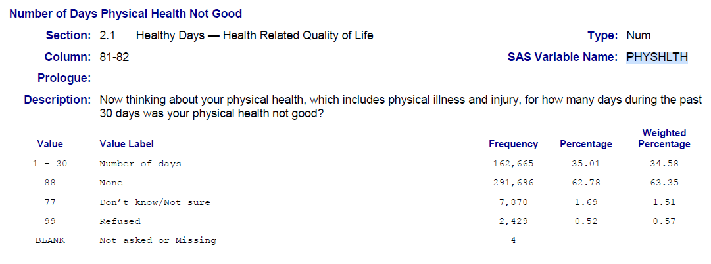
brfss <- read.csv("data/brfss.csv")
summary(brfss) TRNSGNDR X_AGEG5YR X_RACE X_INCOMG
Min. :1.000 Min. : 1.000 Min. :1.000 Min. :1.000
1st Qu.:4.000 1st Qu.: 5.000 1st Qu.:1.000 1st Qu.:3.000
Median :4.000 Median : 8.000 Median :1.000 Median :5.000
Mean :4.059 Mean : 7.822 Mean :1.992 Mean :4.481
3rd Qu.:4.000 3rd Qu.:10.000 3rd Qu.:1.000 3rd Qu.:5.000
Max. :9.000 Max. :14.000 Max. :9.000 Max. :9.000
NA's :310602 NA's :94
X_EDUCAG HLTHPLN1 HADMAM X_AGE80
Min. :1.000 Min. :1.000 Min. :1.000 Min. :18.00
1st Qu.:2.000 1st Qu.:1.000 1st Qu.:1.000 1st Qu.:44.00
Median :3.000 Median :1.000 Median :1.000 Median :58.00
Mean :2.966 Mean :1.108 Mean :1.215 Mean :55.49
3rd Qu.:4.000 3rd Qu.:1.000 3rd Qu.:1.000 3rd Qu.:69.00
Max. :9.000 Max. :9.000 Max. :9.000 Max. :80.00
NA's :208322
PHYSHLTH
Min. : 1.0
1st Qu.:20.0
Median :88.0
Mean :61.2
3rd Qu.:88.0
Max. :99.0
NA's :4 Qualitative Variable
- To look at an example, the one below seeks to understand the healthcare issue in reporting gender based on different definitions. The dataset is part of the Behavioral Risk Factor Surveillance System (brfss) dataset (2014), which includes lots of other variables besides reported gender.
#Load the data
brfss <- read.csv("data/brfss.csv")
#Summarize the TRNSGNDR variable
summary(object = brfss$TRNSGNDR) Min. 1st Qu. Median Mean 3rd Qu. Max. NA's
1.000 4.000 4.000 4.059 4.000 9.000 310602 #Find frequencies
table(brfss$TRNSGNDR)
1 2 3 4 7 9
363 212 116 150765 1138 1468 - Since this table is not very informative, we need to do some edits.
- Check the class of the variable to see the issue with analyzing it as a categorical variable.
class(brfss$TRNSGNDR)[1] "integer"- First, we need to change the TRNSGNDR variable to a factor using as.factor().
# Change variable from numeric to factor
brfss$TRNSGNDR <- as.factor(brfss$TRNSGNDR)
# Check data type again to ensure factor
class(brfss$TRNSGNDR)[1] "factor"- Then, we need to do some data cleaning on the TRNSGNDR Variable.
brfss.cleaned <- brfss %>%
mutate(TRNSGNDR = recode_factor(TRNSGNDR,
'1' = 'Male to female',
'2' = 'Female to male',
'3' = 'Gender non-conforming',
'4' = 'Not transgender',
'7' = 'Not sure',
'9' = 'Refused'))- We can use the levels() command to show the factor levels made with the mutate() command above.
levels(brfss.cleaned$TRNSGNDR)[1] "Male to female" "Female to male" "Gender non-conforming"
[4] "Not transgender" "Not sure" "Refused" - Check the summary.
summary(brfss.cleaned$TRNSGNDR) Male to female Female to male Gender non-conforming
363 212 116
Not transgender Not sure Refused
150765 1138 1468
NA's
310602 - Take a good look at the table to interpret the frequencies in the output above. The highest percentage was the “NA’s” category, followed by “Not transgender”. Removing the NA’s moved the “Not transgender” category to over 97% of observations.
Quantitative Variable
- Let’s use the cleaned dataset to make more changes to the continuous variable PHYSHLTH. In the codebook, it looks like the data is most applicable to the first 2 categories. The 1-30 days coding and the 88 coding, which means 0 days of physical illness and injury.
- Using cleaned data, we need to prep the variable a little more before getting an accurate plot.
- Specifically, we need to null out the 77 and 99 values and make sure the 88 coding is set to be 0 for 0 days of illness and injury.
brfss.cleaned <- brfss %>%
mutate(TRNSGNDR = recode_factor(TRNSGNDR,
'1' = 'Male to female',
'2' = 'Female to male',
'3' = 'Gender non-conforming',
'4' = 'Not transgender',
'7' = 'Not sure',
'9' = 'Refused')) %>%
#Turn the 77 values to NA's.
mutate(PHYSHLTH = na_if(PHYSHLTH, y = 77)) %>%
#Turn the 99 values to NA's.
mutate(PHYSHLTH = na_if(PHYSHLTH, y = 99)) %>%
#Recode the 88 values to be numeric value of 0.
mutate(PHYSHLTH = recode(PHYSHLTH, '88' = 0L))The histogram showed most people have between 0 and 10 unhealthy days per 30 days.
Next, evaluate mean, median, and mode for the PHYSHLTH variable after ignoring the blanks.
mean(brfss.cleaned$PHYSHLTH, na.rm=TRUE)[1] 4.224106median(brfss.cleaned$PHYSHLTH, na.rm=TRUE)[1] 0names(x = sort(x = table(brfss.cleaned$PHYSHLTH), decreasing = TRUE))[1][1] "0"- While the mean is higher at 4.22, the median and most common number is 0.
## Spread to Report with the Mean
var(brfss.cleaned$PHYSHLTH, na.rm=TRUE)[1] 77.00419sd(brfss.cleaned$PHYSHLTH, na.rm=TRUE)[1] 8.775203##Spread to Report with Median
summary(brfss.cleaned$PHYSHLTH, na.rm=TRUE) Min. 1st Qu. Median Mean 3rd Qu. Max. NA's
0.000 0.000 0.000 4.224 3.000 30.000 10303 range(brfss.cleaned$PHYSHLTH, na.rm=TRUE)[1] 0 30max(brfss.cleaned$PHYSHLTH, na.rm=TRUE)-min(brfss.cleaned$PHYSHLTH, na.rm=TRUE)[1] 30IQR(brfss.cleaned$PHYSHLTH, na.rm=TRUE)[1] 3library(semTools)
# Plot the data
brfss.cleaned %>%
ggplot(aes(PHYSHLTH)) + geom_histogram()
# Calculate Skewness and Kurtosis
skew(brfss.cleaned$PHYSHLTH)skew (g1) se z p
2.209 0.004 607.905 0.000 kurtosis(brfss.cleaned$PHYSHLTH)Excess Kur (g2) se z p
3.474 0.007 478.063 0.000 - The skew results provide a z of 607.905 (6.079054e+02) which is much higher than 7 (for large datasets). This indicates a clear right skew which means the data is not normally distributed.
- The kurtosis results are also very leptokurtic with a score of 478.063.
Using Filters Example
Below takes an example of the brfss data to filter by certain variable statuses.
- The first filter() chose observations that were any one of the three categories of transgender included in the data. Used the | “or” operator for this filter().
- The second filter chose people in an age category above category 4 but below category 12, in the age categories 5 through 11.
- The last filter used the !is.na to choose observations where HADMAM variable was not NA.
Next, we reduce data set to contain only variables used to create table by using the select() command.
Next, we change all the remaining variables in data set to factors using mutate_all() command. This not only changes the strings to factors, but also changes the numerical variables to factors.
Finally, we use mutate() commands to change the variable category to something meaningful(from the codebook).
- Notice the backslash before the apostrophe in Don’t in the X_INCOMG recode. This is to prevent the .R file from ending the quotations. You could use double quotes around the statement to bypass this, or add the backslash like I did here.
brfss_small <- brfss.cleaned %>% filter(TRNSGNDR == 'Male to female'| TRNSGNDR == 'Female to male'| TRNSGNDR == 'Gender non-conforming') %>% filter(X_AGEG5YR > 4 & X_AGEG5YR < 12) %>% filter(!is.na(HADMAM)) %>% select(TRNSGNDR, X_AGEG5YR, X_RACE, X_INCOMG, X_EDUCAG, HLTHPLN1, HADMAM) %>% mutate_all(as.factor) %>% #The next few mutates add labels to categorical variables based on the codebook. mutate(X_AGEG5YR = recode_factor(X_AGEG5YR, '5' = '40-44', '6' = '45-49', '7' = '50-54', '8' = '55-59', '9' = '60-64', '10' = '65-69', '11' = '70-74')) %>% mutate(X_INCOMG = recode_factor(X_INCOMG, '1' = 'Less than 15,000', '2' = '15,000 to less than 25,000', '3' = '25,000 to less than 35,000', '4' = '35,000 to less than 50,000', '5' = '50,000 or more', '9' = 'Don\'t know/not sure/missing')) %>% mutate(X_EDUCAG = recode_factor(X_EDUCAG, '1' = 'Did not graduate high school', '2' = 'Graduated high school', '3' = 'Attended college/technical school', '4' = 'Graduated from college/technical school', '9' = NA_character_)) %>% mutate(HLTHPLN1 = recode_factor(HLTHPLN1, '1' = 'Yes', '2' = 'No', '7' = 'Don\'t know/not sure/missing', '9' = 'Refused')) %>% mutate(X_RACE = recode_factor(X_RACE, '1' = 'White', '2' = 'Black', '3' = 'Native American', '4' = 'Asian/Pacific Islander', '5' = 'Other', '6' = 'Other', '7' = 'Other', '8' = 'Other', '9' = 'Other')) #print a summary summary(brfss_small)TRNSGNDR X_AGEG5YR X_RACE Male to female : 77 40-44:27 White :152 Female to male :113 45-49:27 Black : 31 Gender non-conforming: 32 50-54:32 Native American : 4 Not transgender : 0 55-59:44 Asian/Pacific Islander: 6 Not sure : 0 60-64:44 Other : 29 Refused : 0 65-69:24 70-74:24 X_INCOMG X_EDUCAG Less than 15,000 :46 Did not graduate high school :24 15,000 to less than 25,000 :44 Graduated high school :86 25,000 to less than 35,000 :19 Attended college/technical school :68 35,000 to less than 50,000 :26 Graduated from college/technical school:44 50,000 or more :65 Don't know/not sure/missing:22 HLTHPLN1 HADMAM Yes:198 1:198 No : 24 2: 22 9: 2This data set full of categorical variables is now fully cleaned and ready to be analyzed!
Using AI
Use the following prompts on a generative AI, like chatGPT, to learn more about data preparation activities.
What is the difference between ordinal and nominal variables, and how can you recode these data types in R?
How can you use the filter() function to subset a dataset based on multiple conditions using & and | in R?
How does subsetting using square brackets [] differ from using the filter() function in R?
What strategies can you use to handle missing data in R, and how does na.omit() differ from drop_na()?
How does the mutate() function help in transforming and creating new variables, and what are some practical examples?”
What is the purpose of the group_by() function, and how does it interact with summarize() to create summary statistics in R?”
Explain how you can use arrange() to sort a dataset by one or more variables and demonstrate sorting both in ascending and descending order.”
Why is the piping operator %>% useful in R, and how does it improve the readability and structure of your code?
How would you use summarize() to calculate mean, median, and standard deviation for a numerical variable in R?
Summary
- In this lesson, we worked through the basics on data cleaning. Data cleaning is so important and there are so many ways to do it. Provided are some examples using popular functions in dplyr (under tidyverse).
- The goals this lesson are to be able to create visualizations which help to describe a variable or variables more easily (descriptive statistics) and to explore patterns in the data based on groups or between two or more variables (inferential statistics).
At a Glance
In order to succeed in this lesson, we need to learn how to visualize data, noting that there are many ways to do this in R. This lesson presents common graphs used in R, and focuses on using ggplot2, a very common graphics package that is part of the tidyverse.
Because packages evolve fairly quickly, parameters within the commands shown in this section could evolve and adjust. The best way to figure out how to fine-tune your new graph is to explore options and parameter settings, while also using the open-source community.
By the end of this lesson, you should be able to create the following:
- Common Graphs for a Single Categorical Variable
- Common Graphs for a Single Continuous Variable
- Common Graphs for Two Variables at Once
- This lesson does not provide an exhaustive list of what you can do in R, but is a good starting point presenting some of the top graphs used in statistics with some common parameters added in.
Lesson Objectives
- Choose and create graphs for a single categorical variable.
- Choose and create graphs for a single continuous variable.
- Choose and create graphs for two variables at once.
Consider While Reading
It is extremely useful to graph data in R in order to visualize what the data is telling us.
When making graphs, there are a lot of ways to visualize data correctly, but there are just as many to do it incorrectly. Be careful not to force the data into the story you want it to tell.
Always be cautious when looking at visuals to make sure the data was handled properly.
The lesson is arranged by first evaluating the variable or variables of interest by data type (quantitative or quantitative) and then giving some examples of visualizations where this is commonly used. It is essential to make sure the variable is in the right data type before you create a chart. We look at many charts in this lesson including bar charts, density plots, boxplots and scatterplots. A multiple boxplot helps us understand the relationship between a grouping variable and a numerical variable. The scatterplot helps us understand if there is a relationship between two numerical variables and it helps us determine whether that relationship is linear or nonlinear.
A lot of graphs you can do in ggplot, you can also do with base R. However, ggplot has much more capability to customize a specific format for your graphic.
- Base R has many options to graph a variable or variables. If all you want is some insight into the data, this might be the way to go.
- ggplot2 is extremely popular graphing package and has a good pattern for making charts. You set the first layer with the ggplot() command and then add layers as needed for your graphic.
- There are also other graphing packages that serve a specific purpose (i.e., waffle package in R).
Layering in ggplot
- Layering is a fundamental concept in ggplot2 that allows you to build complex visualizations by adding different components (or “layers”) on top of each other. Each layer in a ggplot2 plot can represent different types of data, aesthetics, or annotations, enabling flexibility and control over how data is visualized. Layers can include geometries (e.g., points, lines, bars), statistical summaries, labels, grids, and themes.
- Separation of Plot Components: Each layer can handle a different part of the plot. For example, one layer may be used for bars, another for labels, and another for a trend line. This allows you to build up a plot step by step.
- Customization and Enhancement: By adding multiple layers, you can customize different aspects of the plot such as labels, colors, annotations, and theme elements. Each layer can be independently controlled.
- Modularity: Layering allows you to modularize your plot construction, making it easier to add, remove, or modify parts of the plot without changing the entire structure.
- Combining Data Sources: Different layers can use different datasets or aesthetics, which is useful when you need to overlay one dataset on top of another (e.g., adding a regression line over a scatter plot).
Graphs for a Single Categorical Variable
- A categorical variable has categories that are either ordinal with a logical order or nominal with no logical order.
- Categorical variables need to be set as the factor data type in R to be able to be analyzed and visualized correctly.
- Some common graphing options for single categorical variable:
- Bar graph
- Pie chart
- In any graph, it is beneficial to do any data cleaning and investigation into the variable(s) before you begin. With categorical variables, this may require recoding the factor(s) of interest and possibly renaming it/them to something meaningful if needed.
Bar Graph
- A bar graph depicts the frequency or the relative frequency for each category of the qualitative data as a bar rising vertically from the horizontal axis. A bar graph is also known as a bar chart and is often used to examine similarities and differences across categories of things; bars can represent frequencies, percentages, means, or other statistics.
- We can learn a lot from a bar graph, like the marital status group with the highest and lowest frequencies according to the census.gov.
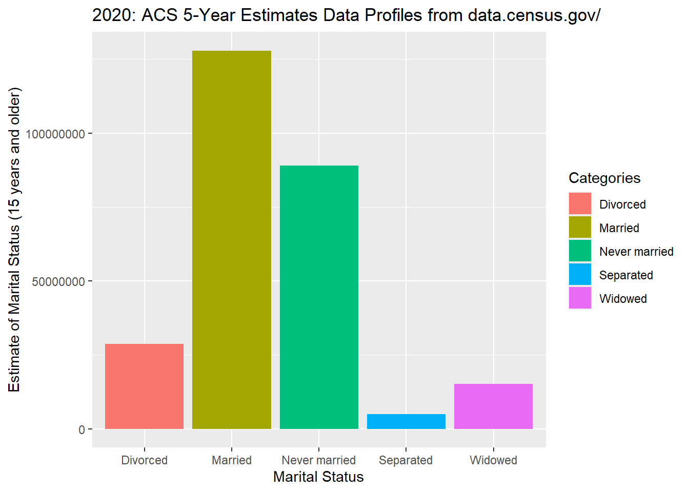
geom_bar()
- Create a Bar Graph using ggplot() Command
- Like histograms, ggplot has many more parameters available over base R to construct bar graphs.
- First, we load tidyerse to access ggplot() command and others. You can always do this at the start of all your code to keep all the libraries together that are being used.
library("tidyverse")- ggplot() works in layers, so you will routinely see the + symbol to kick off a new layer with added functionality.
- Using the ggplot, we always include the aes() command first inside the ggplot() command. The aes() command is a quoting function that describes the variables being used. From there, it depends on the plot.
- First layer: ggplot() and aes() which calls the dataset and variables used.
- Second layer: Graph type: Bar graph: geom_bar().
- Additional layers: labs - for labels including titles; themes; and geom_text. Recreate the example below adding one layer at a time to see how the visualization changes.
Pertinent Parameters to the geom_bar()
- stat=“identity”: In ggplot2, the argument stat=“identity” is used inside the geom_bar when creating bar charts to specify that the actual values of the data should be plotted, rather than calculated summary statistics. By default, ggplot assumes that bar charts use stat=“count”, which counts the number of observations in each category. When you want to display the actual values in your dataset (e.g., sales numbers, average scores), you need to set stat=“identity” to ensure that the y-values are mapped directly from the data rather than being automatically counted.
- position=“dodge”: If we have more than one categorical variable, we might set the position=“dodge” argument. This argument controls how the bars are positioned relative to each other when you are plotting multiple categories within a bar chart. By default, bars in a bar chart are stacked, and setting position=“dodge” ensures that they are placed side-by-side. This is particularly useful when you are comparing multiple groups or categories within the same plot, as it allows for a clear visual distinction between each group. In the example below, we only have one variable, so position=“dodge” argument is not needed.
- In combination, using stat=“identity” and position=“dodge” is common when you want to compare different categories or groups with specific values in a side-by-side manner, ensuring the chart is easy to interpret. For example, if you are comparing sales figures across different products for multiple years, this approach would give you a bar for each product in each year, clearly separated.
- show.legend = FALSE: In ggplot2, the argument show.legend = FALSE is used to hide the legend for a particular layer or the entire plot. By default, ggplot2 automatically adds a legend if you include aesthetics like color, size, or shape that distinguish groups in your data. If you don’t want the legend to appear, you can set show.legend = FALSE.
- scale_fill_manual(): When creating grouped bar charts or other plots with multiple categories, it’s important to ensure that the visual distinction between groups is clear. This is where manually setting the colors for each category comes into play. The scale_fill_manual() function in ggplot2 allows you to manually define the colors used for the filled areas, such as the bars in a bar chart or the shaded areas in an area chart. By using the values argument within scale_fill_manual(), you can specify a custom color palette that suits your design or presentation needs. For example, you might choose a palette of yellow and brown to represent different categories. A key aspect of using scale_fill_manual() effectively is knowing how many colors to provide. The number of colors you define in the values argument must match the number of levels or categories in your data. If you are comparing three product categories, for instance, you’ll need to provide exactly three colors—one for each category. Failing to match the number of colors to the number of categories can result in errors or misrepresentation in the plot. For example, if you have four levels (e.g., four different product categories or groups) and only provide two colors, ggplot may not know how to properly assign colors to the additional categories. Therefore, it’s crucial to know the number of distinct categories in your data and plan your color palette accordingly to maintain clarity and visual consistency in your chart.
## inputting probabilities calculated from a 2023 multiple choice
## question. From what you learned about R so far, how do you expect
## its market share to change?
GoUp <- 0.54285
GoDown <- 0.03809
RemainStable <- 0.34285
NoOpinion <- 0.07619
# designing the data frame
data_frame <- data.frame(Category = c("Go Up", "Go Down", "Remain Stable",
"No Opinion"), Percentage = c(GoUp, GoDown, RemainStable, NoOpinion))
# Making the graph
MarketShare <- ggplot(data_frame, aes(x = Category, y = Percentage, fill = Category)) +
geom_bar(stat = "identity", show.legend = FALSE) + labs(title = "How do you expect R's market share to change?",
x = "Opinion Category", y = "Percentage (%)") + theme_minimal() + geom_text(aes(label = Percentage),
vjust = -0.5, size = 4) + scale_fill_manual(values = c("red", "blue",
"purple", "green"))
MarketShare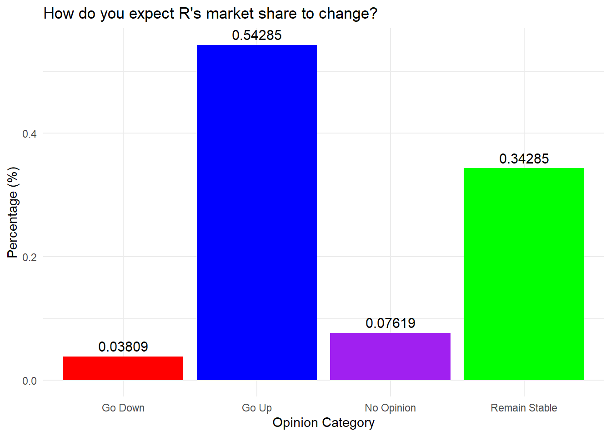
Bar Graph with Data Wrangling
- Let’s start an example from scratch so that we can see each parameter take effect. In doing so, lets use a dataset to make a bar graph instead of relying on pre-calculated data.
- Lets examine the AUQ300 variable from the nhanes survey to run an example.
nhanes <- read.csv("data/nhanes2012.csv")- Next, we need to check the import by looking at the summary or head of the data.
# Results hidden to save space, but gives you the first 6 records in
# the data set.
head(nhanes)- We can also check the summary of data of only the variable of interest, AUQ300, to get a sense of what we are evaluating.
summary(nhanes$AUQ300) Min. 1st Qu. Median Mean 3rd Qu. Max. NA's
1.000 1.000 2.000 1.656 2.000 7.000 4689 - The AUQ300 variable represents gun use. A screenshot of the codebook is copied below so that we can see what AUQ300 really refers to. It is available on https://wwwn.cdc.gov/Nchs/Nhanes/2011-2012/AUQ_G.htm. This is always a necessary step because variable names can be convoluted and not representative of the variable definition.

Recode Variable if Needed
- Look to see if the AUQ300 needs recoding after looking at the codebook and making sense of the variable.
- AUQ300 needs to be a factor variable with 1 equaling a Yes and 2 equaling a No. We can use recode_factor to accomplish 2 things at once with the mutate function.
- recode_factor() transforms the levels of a categorical variable (factor) into a new set of levels and is specific to categorical variables.
- recode() is generic and can apply to numerical, categorical, or textual data, but still transforms data from one format or code to another.
nhanes.clean <- nhanes %>%
select(AUQ300) %>%
mutate(AUQ300 = recode_factor(AUQ300, `1` = "Yes", `2` = "No"))- Then, we need to check the recode for accuracy. You should see the No’s and Yes’s alongside the rest being coded as NA’s.
summary(nhanes.clean) AUQ300
Yes :1613
No :3061
NA's:4690 Get Bar Roughly Plotted
Start with the basic plot using the ggplot() and geom_bar() commands.
Below writes the statement with and without the piping operator.
- Since we are also going to use data preparation techniques, the piping operator is recommended.
# Without piping operator ggplot(nhanes.clean, aes(x = AUQ300)) + geom_bar()
# With piping operator nhanes.clean %>% ggplot(aes(x = AUQ300)) + geom_bar()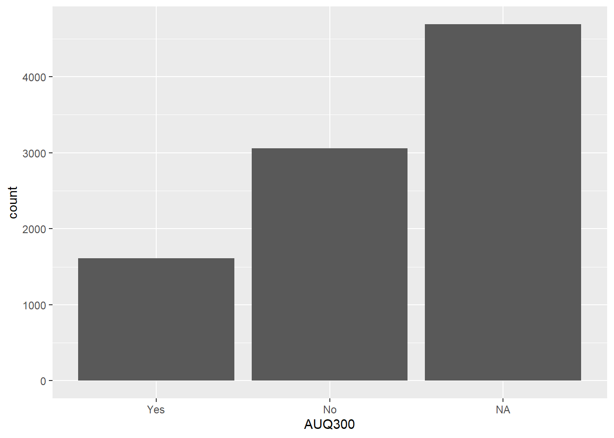
Add Functions to Clean Chart
- Omit the NA category from AUQ300 variable, which represents gun use. Then plot the graph below.
- The drop_na() function is a good way to drop NA values from either the entire dataset or just one variable. It was introduced in the data prep lesson. Since we are only interested in dropping NA values from our one variable of interest that is to be graphed (AUQ300), we can put it in the parentheses so that we do not unintentionally drop lots of observations for no reason.
- Add an axis labels under labs(x = …, y=…).
nhanes.clean %>%
drop_na(AUQ300) %>%
ggplot(aes(x = AUQ300)) + geom_bar() +
labs(x = "Gun use", y = "Number of participants")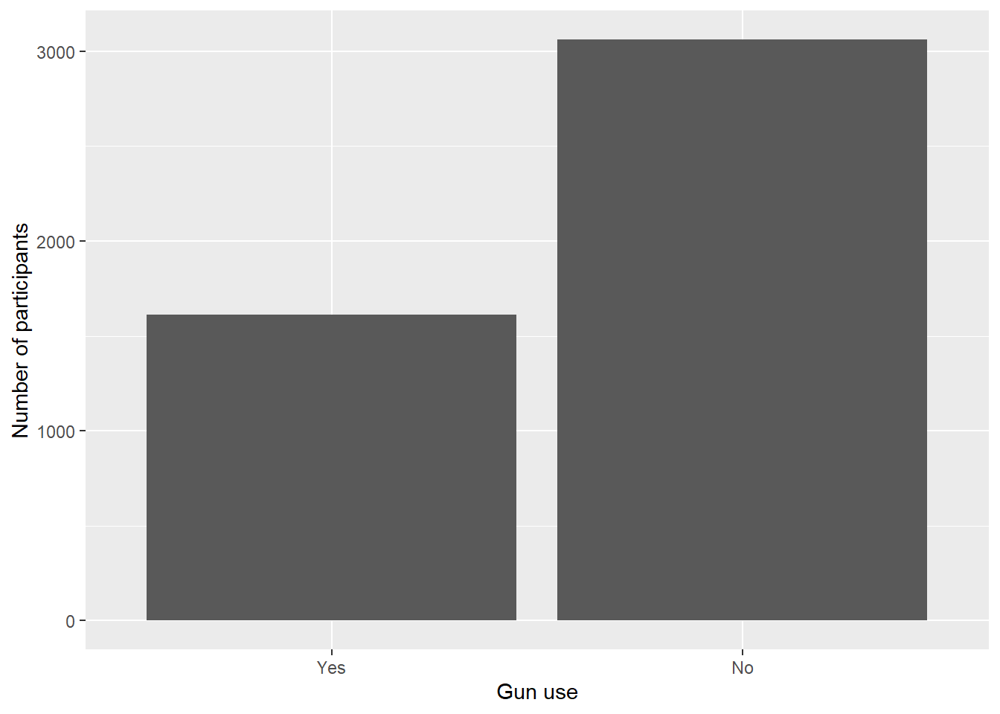
##Here, we really benefit from the piping operator because we are doing more than one thing.- From the bar graph, we can see that almost double the amount of people have not fired a firearm for any reason than those that fired one.
Adding Color
There are many ways to add color to a bar graph. Below, the color is filled in directly in the aes() command by choosing it to give a different color to each categorical value of AUQ300.
- When fill is mapped to a variable, the fill color of the geom will vary based on the values of that variable. This is useful for distinguishing different groups or categories within the data. In this case the fill=AUQ300 gives a distinct color pattern based on how many categories there are considering the fact we are using the default “scale.”
nhanes.clean %>% drop_na(AUQ300) %>% ggplot(aes(AUQ300, fill=AUQ300)) + geom_bar() + labs(x = "Gun use", y = "Number of participants", subtitle = "Filled inside the aes()")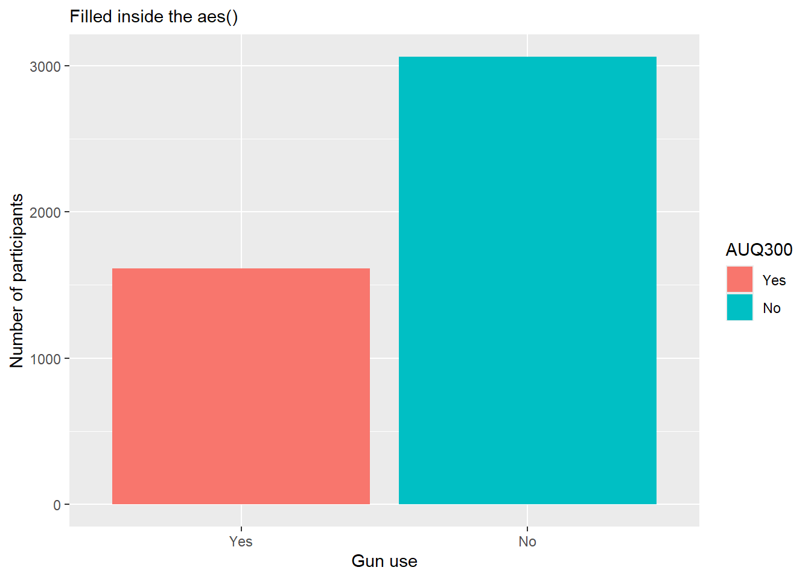
Data Prep and Then Visualized
In the command below, we create a gss.2016.cleaned object to make a barplot. In doing so, we do the following:
Create a bar graph using the ggplot() command, which requires an aes() quoting function. This function says that we want to use the grass variable in our bar graph.
Drop all NAs from the grass variable so that legal and not legal are the only categories.
We then create the bars and fill them with 2 colors, red and purple. Many color codes can be used here, and will be discussed in a later lesson.
We then add labels to our graph on both x and y axis.
Finally, we print the new graph, which is saved under the legalize.bar object.
Below, I brought back over the code from the last part in Data Preparation. You should still have this in your Chapter1.R file. We are going to use that file to create a graphics in R.
gss.2016 <- read_csv(file = "data/gss2016.csv")
gss.2016.cleaned <- gss.2016 %>%
mutate(grass = as.factor(grass)) %>%
mutate(grass = na_if(x = grass, y = "DK")) %>%
mutate(grass = na_if(x = grass, y = "IAP")) %>%
mutate(grass = droplevels(x = grass)) %>%
mutate(age = recode(age, `89 OR OLDER` = "89")) %>%
mutate(age = as.numeric(x = age)) %>%
mutate(age.cat = cut(x = age, breaks = c(-Inf, 29, 59, 74, Inf), labels = c("< 30",
"30 - 59", "60 - 74", "75+")))- Once the data is prepped, we can graph the variable or variables.
ggplot(gss.2016.cleaned, aes(grass)) + geom_bar() ##with no piping operator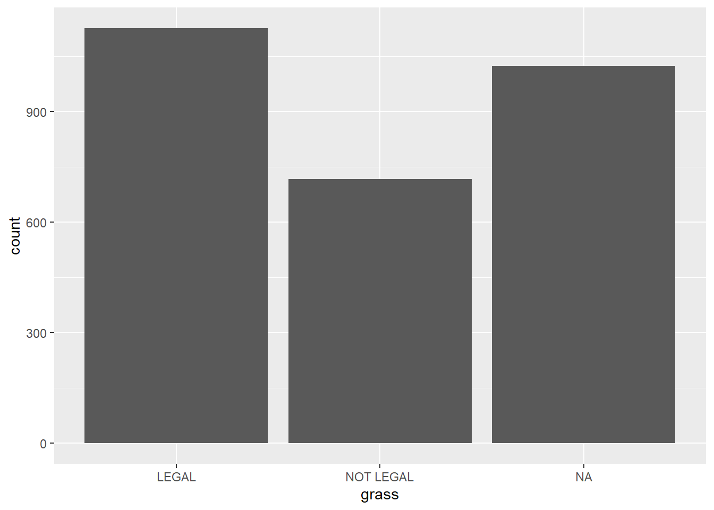
gss.2016.cleaned %>%
ggplot(aes(grass)) + geom_bar() ##with piping operator
# Make a Bar Graph for Grass Variable
gss.2016.cleaned %>%
drop_na() %>%
ggplot(aes(grass)) + geom_bar(fill = c("red", "blue")) + labs(x = "Should marijuana be legal",
y = "Frequency of Responses")
Edit The Graphic
- Next, we can edit these commands to include the age variable. The aes() quoting function has expanded to have the bars filled color using the grass variable, the age category has replaced the grass variable on the x axis.
gss.2016.cleaned %>%
drop_na() %>%
ggplot(aes(age.cat, fill = grass)) + geom_bar() + labs(x = "Age Category",
y = "Frequency of responses")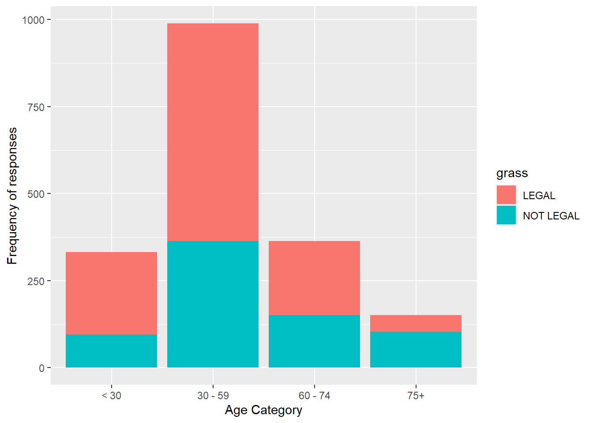
- We can add the position set at “dodge” inside the geom_bar() layer to make the barchart unstacked (or grouped).
gss.2016.cleaned %>%
drop_na() %>%
ggplot(aes(age.cat, fill = grass)) + geom_bar(position = "dodge") +
labs(x = "Age Category", y = "Frequency of responses")
- We can edit further to include a new a formula on the y axis to sum and count.
- In the formula you provided, after_stat(count) is used within the ggplot2 framework to refer to the computed statistic generated by the geom_bar() function. Specifically, in the context of bar plots, count refers to the number of observations (or frequency) for each category within the data.
- When you use after_stat(count), you are referencing the count that is computed after geom_bar() has processed the data and calculated how many observations fall into each group (in this case, within each age category and the “grass” variable, which likely refers to attitudes toward marijuana legalization).
- We also gave this a theme and updated the labels.
gss.2016.cleaned %>%
drop_na() %>%
ggplot(aes(age.cat, y = 100 * (after_stat(count))/sum(after_stat(count)),
fill = grass)) + geom_bar(position = "dodge") + theme_minimal() +
labs(x = "Age Category", y = "Percent of responses")
- Evaluate these graphs and see what information you can get from them.
Pie Chart
- A pie chart is a segmented circle whose segments portray the relative frequencies of the categories of a qualitative variable.
- Slices of pie in different colors represent the parts.
- In this example, the firearm is divided by type to show parts of a whole, where the total of the proportions must add to 1.0 and the total of the percentages must add to 100%.
# Importing data from working directory
fbi.deaths <- read.csv("data/fbi_deaths.csv", stringsAsFactors = TRUE)
# Selecting rows of interest for pie chart
fbi.deaths.small <- fbi.deaths[c(3, 4, 5, 6, 7), ]
fbi.deaths.small <- fbi.deaths.small %>%
rename(Weapon = X)
# Checking summary of fbi deaths
summary(fbi.deaths.small) Weapon X2012 X2013 X2014
Firearms, type not stated:1 Min. : 116 Min. : 123 Min. : 93
Handguns :1 1st Qu.: 298 1st Qu.: 285 1st Qu.: 258
Other guns :1 Median : 310 Median : 308 Median : 264
Rifles :1 Mean :1779 Mean :1691 Mean :1662
Shotguns :1 3rd Qu.:1769 3rd Qu.:1956 3rd Qu.:2024
Asphyxiation :0 Max. :6404 Max. :5782 Max. :5673
(Other) :0
X2015 X2016
Min. : 177 Min. : 186
1st Qu.: 258 1st Qu.: 262
Median : 272 Median : 374
Mean :1956 Mean :2201
3rd Qu.:2502 3rd Qu.:3077
Max. :6569 Max. :7105
- Again, ggplot works in layers, so in order to make a pie, you need a few layers and have a few optional ones.
- The aes() command specifies the variable to create the pie, in this case x2016.
- geom_col() sets the borders of the pie and makes it visible.
- coord_polar() command makes the pie circular.
- theme_void() command is optional and adjusts the theme of the pie. to remove axis, background, etc.
ggplot(fbi.deaths.small, aes(x="", y=X2016, fill=Weapon)) +
geom_col() +
coord_polar("y", start=0) +
theme_void() 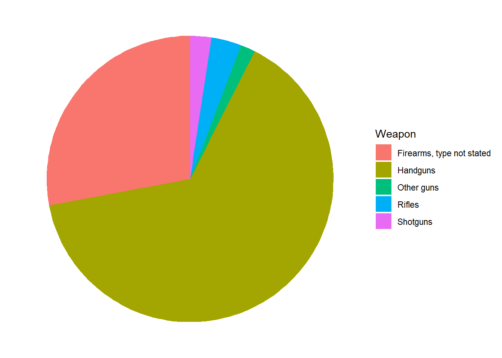
- From the pie, we can see that the majority of weapons that caused fbi gun related deaths are handguns followed by a type of firearm that is not stated.
Comparison of Charts
- Recommended graphs for single categorical or factor type variable:
- Bar graph, for showing relative group sizes.
- Pie charts are available in R but are not recommended because they tend to be less clear for comparing group sizes.
- Pie charts are difficult to read since the relative size of pie pieces is often hard to determine.
- Pie charts take up a lot of space to convey little information.
- People often use fancy formatting like 3D, which takes up more space and makes understanding relative size of pie pieces even more difficult.
Graphs for a Single Continuous Variable
- A continuous variable refers to a variable that can take any value over a range of values.
- A continuous variable needs to be numeric, and could be integer type or numeric type in R. Just like with graphs that include categorical variables, it is beneficial to do any data cleaning and investigation into the variable(s) before you begin. With continuous variables, this may require recoding the variable to coerce it to the appropriate data type and/or renaming it to something meaningful if needed.
- It is also beneficial to make sure the numerical variable is indeed supposed to be numerical (as opposed to a factor). For instance, you commonly see numbers listed for categories like the Yes/No coded as a 1/2, such as with the AUQ300 variable.
Some common graphing options for single continuous variable:
- Histograms (From Lesson 2)
- Density plots
- Boxplots
- Violin plots
Histograms
A histogram is a useful plot to determine central tendency and spread.
We went over histograms in Lesson 2, so refer back for information on how to create a histogram using base R and ggplot.
Remember that you can tell the distribution from a histogram, and that distribution can be normal or skewed (Right or Left).
With each chart based on quantitative data, you should be able to get a sense of the distribution.
The histogram below looks right skewed.
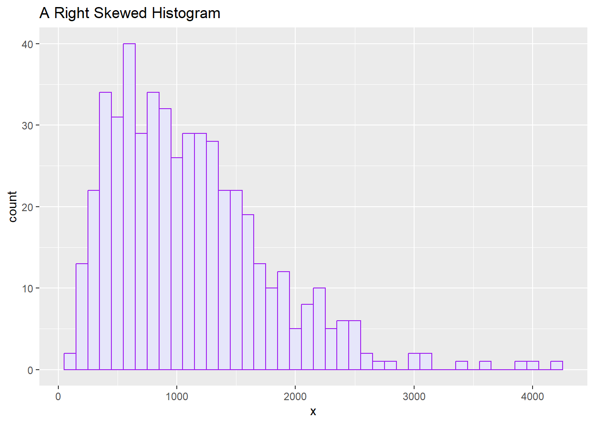
Density Plots
A density plot is similar to a histogram but more fluid in appearance because it does not have the separate bins.
Probability density is not very useful for interpreting what is happening at any given value of the variable on the x-axis, but it is useful in computing the percentage of values that are within a range along the x-axis.
The area under the curve in a density plot could be interpreted as the probability of a single observation or a range of observations.
We can use random normal data to create the density plot like shown below with a sample of 1000, a mean of 10 and a standard deviation of 2. To do this, we need to make the vector and assign it to a data frame.
In R, set.seed() is a function used to set the seed for random number generation. By setting a seed using set.seed(), you ensure reproducibility of your code. If you run the same code with the same seed, you’ll get the same sequence of random numbers every time. This is particularly useful for debugging, testing, or when you want to ensure that your results are reproducible.
We use set.seed before any function with a random normal generator to ensure reproducibility.
If a dataset is provided, then you do not need to generate your own random data as shown in the step below.
set.seed(1)
x <- rnorm(1000, mean = 10, sd = 2)
df <- data.frame(x)- Next, we can make the density plot using the ggplot2 package under tidyverse.
- Layer 2 includes the geom_density() command in addition to the standard Layer 1 ggplot() command to create the density plot.
ggplot(df, aes(x)) + geom_density()
There are a lot of arguments you can change. I selected a couple below. Be sure to look at the help file on the geom_density() layer to get the variety on what you can do.
- color = sets a line color
- lwd = makes the line thicker. Increase this number for thicker line.
- fill= colors the area under the curve.
- alpha= sets the transparency to the area under the curve.
ggplot(df, aes(x)) + geom_density(color = "darkblue", lwd = 2)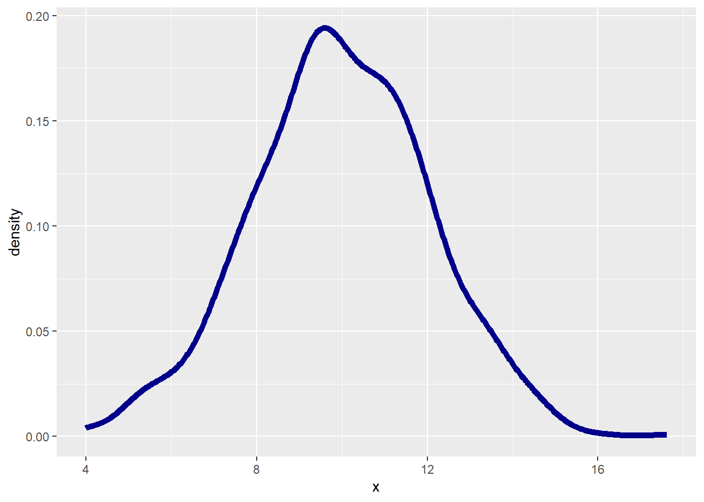
ggplot(df, aes(x)) + geom_density(color = "darkblue", fill = "lightblue",
alpha = 0.5)
- We can even add a mean line, which we know in this case is 10 because we used random normal data with that mean set as a parameter.
- geom_vline() is a function used to add vertical lines to a plot created with ggplot. This function is useful for visually indicating specific points or ranges on the x-axis.
- You can do a line break in your R code after a comma (\(,\)) or after a plus sign (\(+\)). I find things easier to read on less lines, but it is personal preference how many lines you use given still following the rules in R.
ggplot(df, aes(x)) + geom_density(color = "darkblue", fill = "lightblue",
alpha = 0.5) + geom_vline(aes(xintercept = mean(x)), color = "red",
linetype = "dashed", lwd = 1)
- You do not need the rnorm function if you are provided a dataset with a numerical variable. The following code uses the customers dataset to do 2 examples of density plots with 2 numerical variables.
customers <- read.csv("data/customers.csv")
str(customers)'data.frame': 200 obs. of 10 variables:
$ CustID : int 1530016 1531136 1532160 1532307 1532356 1532387 1533017 1533561 1533697 1533766 ...
$ Sex : chr "Female" "Male" "Male" "Male" ...
$ Race : chr "Black" "White" "Black" "White" ...
$ BirthDate: chr "12/16/1986" "5/9/1993" "5/22/1966" "9/16/1964" ...
$ College : chr "Yes" "Yes" "Yes" "Yes" ...
$ HHSize : int 5 5 2 4 5 2 3 5 3 2 ...
$ Income : int 53000 94000 64000 60000 47000 67000 84000 76000 42000 71000 ...
$ Spending : int 241 843 719 582 845 452 153 1079 247 708 ...
$ Orders : int 3 12 9 13 7 9 2 23 3 4 ...
$ Channel : chr "SM" "TV" "TV" "SM" ...ggplot(customers, aes(Income)) + geom_density()
ggplot(customers, aes(Orders)) + geom_density(color = "#745033", fill = "#740000",
alpha = 0.5)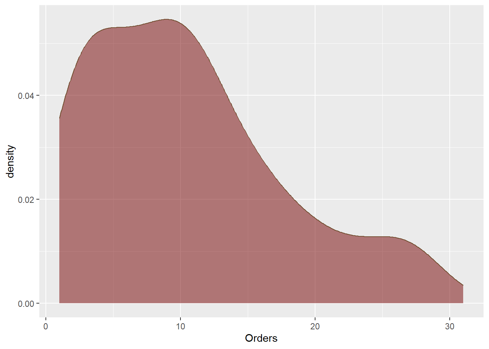
Boxplot
A boxplot is a visual representation of data that shows central tendency (usually the median) and spread (usually the interquartile range) of a numeric variable for one or more groups.
Boxplots are often used to compare the distribution of a continuous variable across several groups.
A box plot allows you to:
- Graphically display the distribution of a data set.
- Compare two or more distributions.
- Identify outliers in a data set.

- Boxplots include the following information:
- A line representing the median value.
- A box containing the middle 50% of values.
- Whiskers extending to 1.5 times the IQR.
- Outliers more than 1.5 times the IQR away from the median.

- This boxplot above displays 5 summary values:
- S = smallest value.
- L = largest value.
- Q1 = first quantile = 25th percentile.
- Q2 = median = second quantile = 50th percentile.
- Q3 = third quantile = 75th percentile.
- For example, use the GrowthFund Vector from the last lesson. It is executed again below.
GrowthFund <- c(-38.32, 1.71, 3.17, 5.99, 12.56, 13.47, 16.89, 16.96, 32.16,
36.29)
GrowthFund <- as.data.frame(GrowthFund)- We can use ggplot to retrieve our graph and associated numbers.
- The outlier is visually depicted on the graph as -38.32.
ggplot(GrowthFund, aes(GrowthFund)) + geom_boxplot()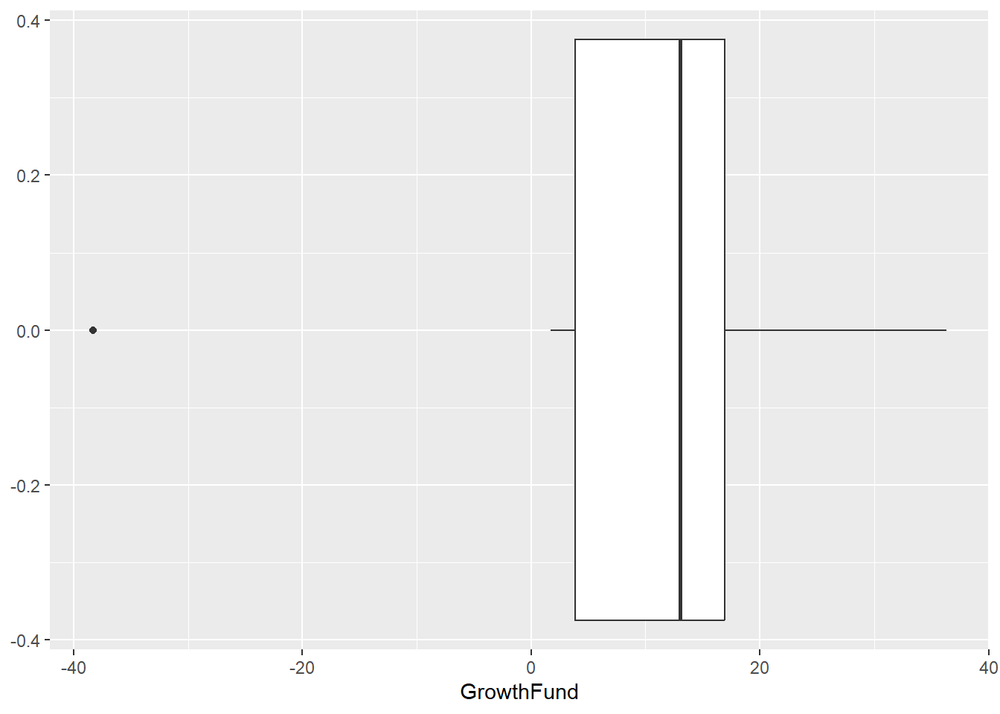
- We can add a little color to the plot with the fill parameter, but then we also need to be sure to turn off the legends in the geom_boxplot.
ggplot(GrowthFund, aes(GrowthFund)) + geom_boxplot(fill = "red")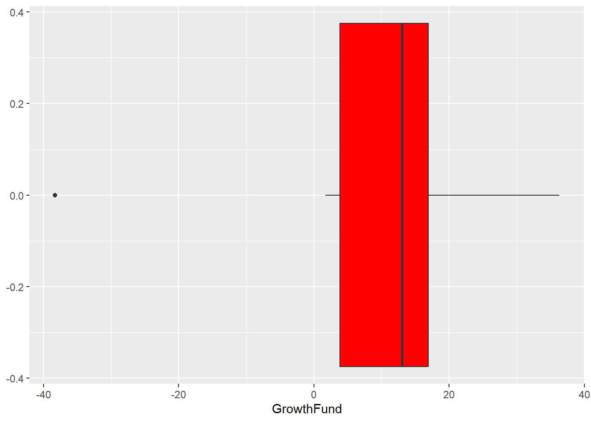
You can add parameters to make this visualization more professional, but this gets you started. Be sure to look at some examples in the R community or on ChatGPT.
Another example below using the mtcars dataset.
mtcars %>%
ggplot(aes(x="", y = mpg)) +
geom_boxplot(fill="lightgreen") +
theme_minimal() 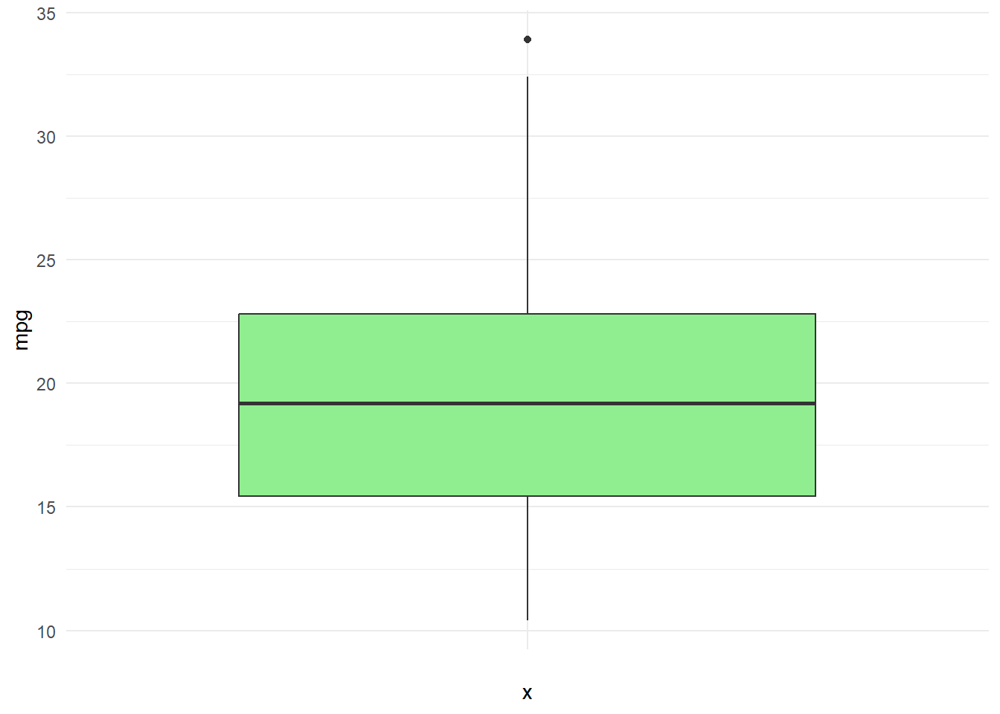
semTools::skew(mtcars$mpg) #normalskew (g1) se z p
0.672 0.433 1.553 0.120 semTools::kurtosis(mtcars$mpg) #mesokurticExcess Kur (g2) se z p
-0.022 0.866 -0.025 0.980 Looks like the mpg variable is quite normal with one potential outlier to the right, but no major signs of skewness or kurtosis.
We can also get a histogram of mpg and are able to make the same claims towards normality. You can see a slight pull to the right, but it is seemingly normal. A higher sample size could help here.
ggplot(mtcars, aes(mpg)) + geom_histogram(binwidth = 5, color = "black",
fill = "green")
Graphs for Two Variables At Once
- Combinations of 2 Variable Types for Graphing
- Two categorical/ factor.
- One categorical/ factor and one continuous/ numeric.
- Two continuous/ numeric.
Bar Graphs for Two Categorical Variables
- There are two formats available for bar charts:
- Grouped
- Stacked
# A tibble: 6 × 3
# Groups: vs, gear [6]
vs gear n
<dbl> <dbl> <int>
1 0 3 12
2 0 4 2
3 0 5 4
4 1 3 3
5 1 4 10
6 1 5 1
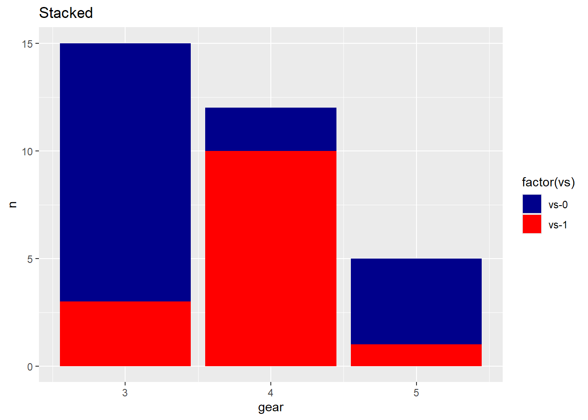
Grouped Bar Graph
Grouped bar graph allow comparison of multiple sets of data items, with a single color used to denote a specific series across all sets.
For example, we can look at both the vs and gear variables in the ggplot command.
- You can do a little grouping and counting before you began to generate a new table with frequencies based on vs and gear variables. Once a new dataset object is made, you can make the graph with the geom_bar layer specifying the stat=“identity”.
- Since there are two variables, you can set the position to dodge to view the fill categorical variable side by side.
- (stat = “identity”) tells ggplot that the y values are already computed and should be used as-is for the heights of the bars. In this case, they are frequencies calculated in the countsDF dataset.
mtcars <- mtcars %>%
mutate(vs = as.factor(vs)) %>%
mutate(gear = as.factor(gear))
countsDF <- mtcars %>%
group_by(vs, gear) %>%
count()
summary(countsDF) vs gear n
0:3 3:2 Min. : 1.000
1:3 4:2 1st Qu.: 2.250
5:2 Median : 3.500
Mean : 5.333
3rd Qu.: 8.500
Max. :12.000 ggplot(countsDF, aes(x = gear, y = n, fill = vs)) + geom_bar(stat = "identity",
position = "dodge") + labs(title = "Grouped Car Distribution by Gears and VS",
x = "Number of Gears", y = "Count") + theme_minimal()
Stacked Bar Graph
- A Stacked bar graph extends the standard bar graph from looking at numeric values across one categorical variable to two. Each bar in a standard bar graph is divided into a number of sub-bars stacked end to end, each one corresponding to a level of the second categorical variable.
- Using ggplot, we can also stack these charts by removing the position = dodge statement.
ggplot(countsDF, aes(x = gear, y = n, fill = vs)) +
geom_bar(stat = "identity") +
labs(title = "Stacked Car Distribution",
x = "Number of Gears",
y = "Count") +
theme_minimal()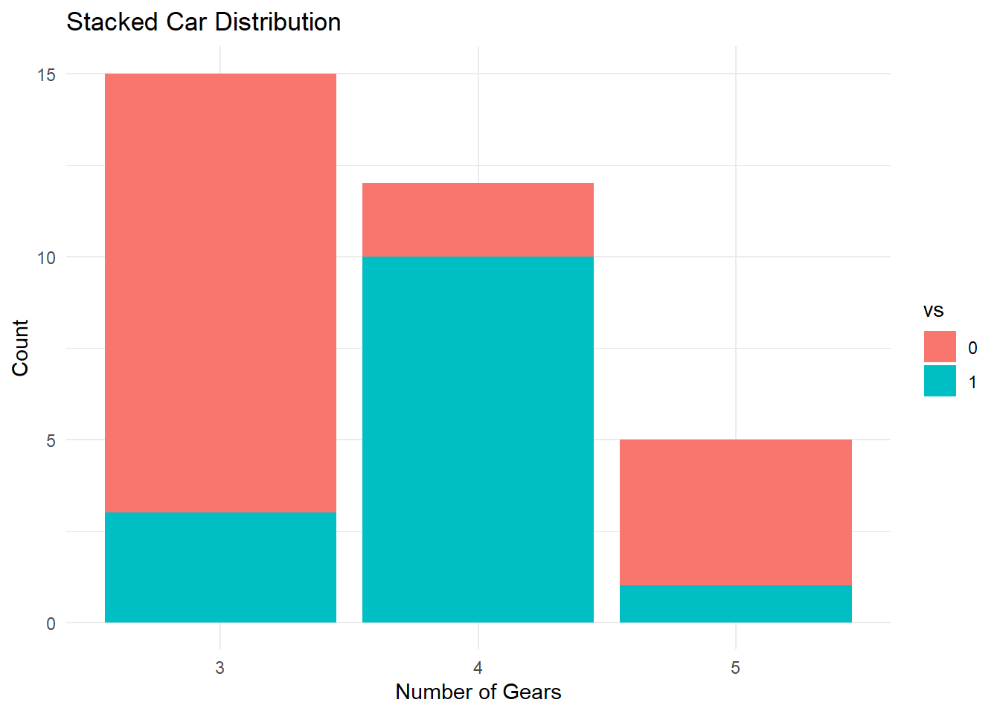
Bar Graph for Continuous Across Groups
In comparison to a bar graph for a single categorical variable, a bar chart for a continuous variable across groups includes both a x and y axis. The continuous variable is put on the y axis, and the categorical (factor) variable is placed on the x axis showing the groups.
Therefore, instead of counting data based on group, we can see another continuous variable based on group data.
The frequency data (i.e., counts) can be replaced with another numerical variable like mean.
In the below example, instead of counting observations per group, here, we took the average mpg (a continuous variable) based on groups of gear and vs and summarized the data into a variable avg_mpg. We then used that variable in a ggplot() command to create a unique chart to that above.
avg_mpg <- mtcars %>%
group_by(gear, vs) %>%
summarise(mpg = mean(mpg, na.rm = TRUE))ggplot(avg_mpg, aes(gear,
mpg, fill = vs)) +
geom_bar(stat = "identity", position = "dodge") +
ggtitle("Average MPG by VS and Gear")
- Below, we can add color using the scale_fill_manual. Since there are two colors, we use the c() command to combine them together inside the layer.
ggplot(avg_mpg, aes(gear, mpg, fill = vs)) + geom_bar(stat = "identity",
position = "dodge", color = "black") + ggtitle("Average MPG by VS and Gear") +
scale_fill_manual(values = c("yellow", "brown"))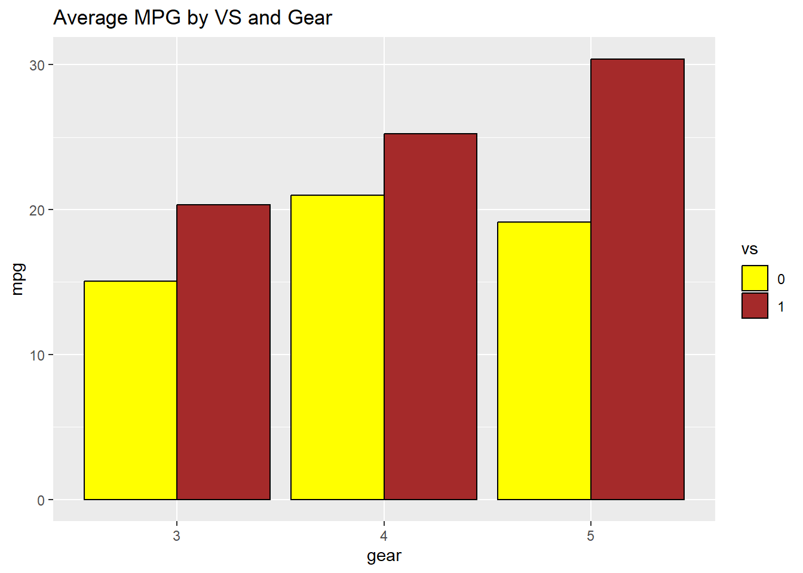
Boxplot for Continuous Across Groups
A boxplot requires one continuous variable (like we did above). When we include an additional grouping variable, we get multiple boxplots, one for each group. This allows us to directly compare distributions.
The categorical variable should correctly be a factor data type before you begin.
In the example below, mpg is the continuous variable, and gear is the categorical variable.
We see 3 boxplots for three values of gear (3, 4, 5). ggplot() and geom_boxplot() are required components of the command. The scale_fill_manual() and theme_minimal() layers are optional ways to change the style and color.
mtcars %>%
ggplot(aes(x = gear, y = mpg, fill = gear)) +
geom_boxplot(show.legend = FALSE) +
scale_fill_manual(values = c("gray", "red", "blue")) +
theme_minimal()
- Lets alter the functions above to depict mpg based on vs with categorical states 0 and 1.
mtcars %>%
ggplot(aes(x = vs, y = mpg, fill = vs)) + geom_boxplot(show.legend = FALSE) +
scale_fill_manual(values = c("gray", "red")) + theme_minimal()
Scatterplot for Two Continuous Variables
Scatterplots
- A scatterplot is used to determine if two continuous variables are related.
- Each point is a pairing: \((x_1, y_1),(x_2, y_2),\) etc.
- Our goal with a scatterplot is to characterize the relationship by visual inspection. This includes determining if the relationship looks positive, negative, or not existent.

Sometimes, it is really clear how to characterize the relationship. Other times, additional statistical tests are needed to confirm the relationship (which we will go over in later lessons). This is true especially with big data, where the plot window can look like a giant blog of observations.
Let’s work a clean example examining the relationship between income and the years of education one has had.
This plot has a clear positive trend, meaning that as one has more years of education, we see higher income. And similarly, as we see higher income, we also see more years of education. This means that a scatter can help characterize the relationship, and does not state that one variable is causing another to occur.
Edu <- read.csv("data/education.csv")
plot(Edu$Income ~ Edu$Education, ylab = "Income", xlab = "Education")
Working with ggplot instead of base R, we would use the following code.
- Layer 1: ggplot() command with aes() command directly inside of it pointing to x and y variables.
- Layer 2: geom_point() command to add the observations as indicators in the chart.
- Layer 3 or more: many other optional additions like labs (for labels) as shown below.
ggplot(Edu, aes(x = Education, y = Income)) + geom_point() + labs(y = "Income", x = "Education")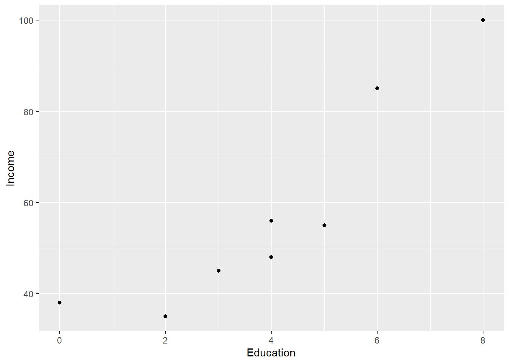
geom_point() has some parameters you can change like shape = where you can add depth to your chart. Some common shapes of geom_point are as follows.
# shape = 0, square shape = 1, circle shape = 2, triangle point up
# shape = 3, plus shape = 4, cross shape = 5, diamond shape = 6,
# triangle point down shape = 7, square cross shape = 8, star shape =
# 9, diamond plus shape = 10, circle plus shape = 11, triangles up
# and down shape = 12, square plus shape = 13, circle cross shape =
# 14, square and triangle down shape = 15, filled square shape = 16,
# filled circle shape = 17, filled triangle point-up shape = 18,
# filled diamond- For instance, the code below changes the color, shape, and size of the geom_point().
ggplot(Edu, aes(x = Education, y = Income)) + geom_point(color = "#183028",
shape = 18, size = 10) + labs(y = "Income", x = "Education")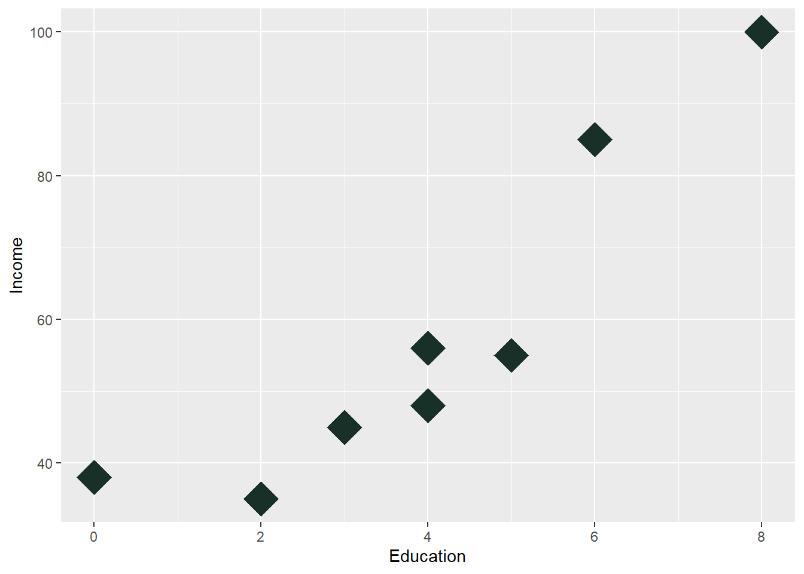
- geom_line() in R’s ggplot2 package is used to create line plots, which connect data points with straight lines. It is commonly used to visualize trends over time or continuous relationships between variables.
- ggplot allows us to add a geom_line, which is helpful in drawing a line through the data. Here, I am also resetting the color off of the default value. You see this a lot on time series models like stock charts.
ggplot(Edu, aes(x = Education, y = Income)) + geom_point(color = "#183028",
shape = 18, size = 4) + labs(y = "Income", x = "Education") + geom_line(color = "#789F90")
- In R’s ggplot2 package, geom_smooth() is used to add a trendline (also called a smoothing line or a regression line) to a plot. It fits a line or curve through your data points based on a smoothing method, allowing you to visualize the general relationship between the x and y variables. The trendline can help reveal patterns such as linear relationships or trends in noisy data. The trendline give us 2 parts:
- Trendline: This line represents the fitted relationship between the two variables, which could be linear, polynomial, or a more flexible curve depending on the smoothing method used.
- Confidence Interval: The shaded area (often gray by default) around the trendline shows the confidence interval, giving a sense of the uncertainty of the fit.
- We can change our line to a geom_smooth line, which is considered a trendline to help us visualize the relationship between the variables.
ggplot(Edu, aes(x = Education, y = Income)) + geom_point(color = "#183028",
shape = 18, size = 4) + labs(y = "Income", x = "Education") + geom_smooth(color = "#789F90")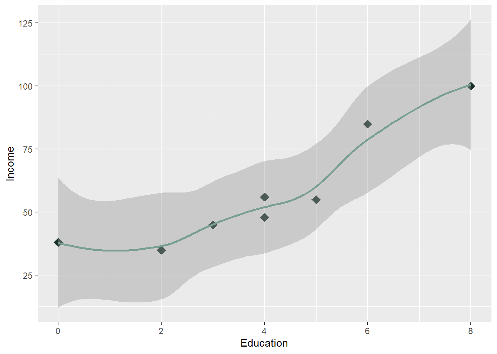
- We can change the type of trendline. The most common is the to develop the trendline using the lm method, which stands for the linear method that we are going to learn in the Regression lesson. For now, lets insert _method=“lm” into our geom_smooth() later to see the change.
- The gray band on a scatter plot in R usually represents the confidence interval around a fitted line when you plot it using geom_smooth() in ggplot2. This gray area visualizes the uncertainty or variability of the estimated regression line, providing a sense of how confident we are about the predictions at different points along the line.
ggplot(Edu, aes(x = Education, y = Income)) + geom_point() + labs(y = "Income",
x = "Education") + geom_smooth(method = "lm", color = "#789F90")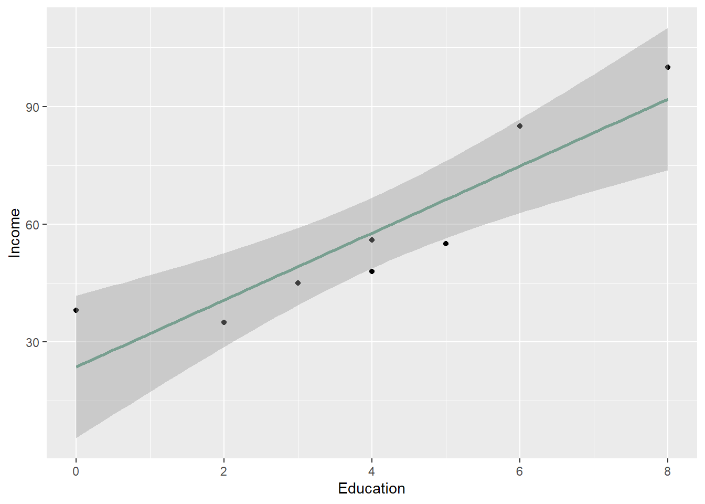
Unlike geom_smooth(), which fits a trendline or smoothing line to data, geom_line() directly connects the raw data points in the order they appear (typically by the x-axis values). In business statistics class that teaches linear regression, we use more trendlines than geom_lines.
Let’s look at a few more examples and see if the relationship is considered positive, negative, or not existent.
Below, we see a negative trend.
ggplot(mtcars, aes(x = disp, y = mpg)) + geom_point() + geom_smooth(method = "lm",
color = "#789F90")
- In regards to the hp variable, below, we see another negative trend.
ggplot(mtcars, aes(x = hp, y = mpg)) + geom_point() + geom_smooth(method = "lm",
color = "#789F90")
- In regards to the qsec variable, below, we see a weak positive trend. This relationship would need to verified later on.
ggplot(mtcars, aes(x = qsec, y = mpg)) + geom_point() + geom_smooth(method = "lm",
color = "#789F90")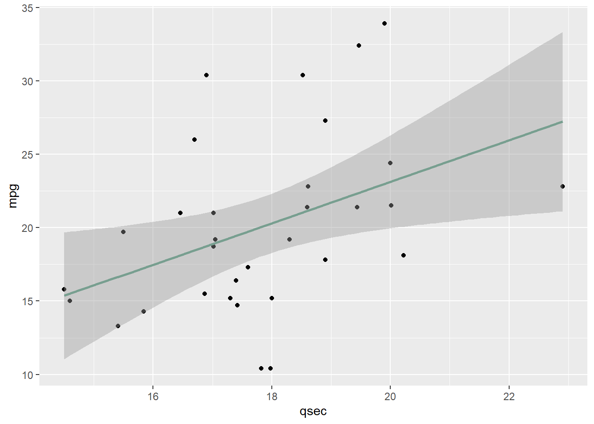
- The plot() command also works when you do not have 2 continuous variables, and instead have one categorical variable paired with one continuous variable. However, the plot is not as adequate as others are in inferring the relationship from the variables.
- For example, the plot below would be better served as a boxplot.
plot(mtcars$mpg ~ mtcars$cyl)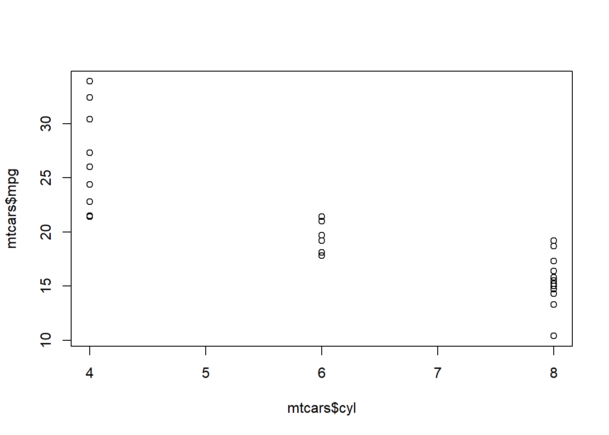
boxplot(mtcars$mpg ~ mtcars$cyl)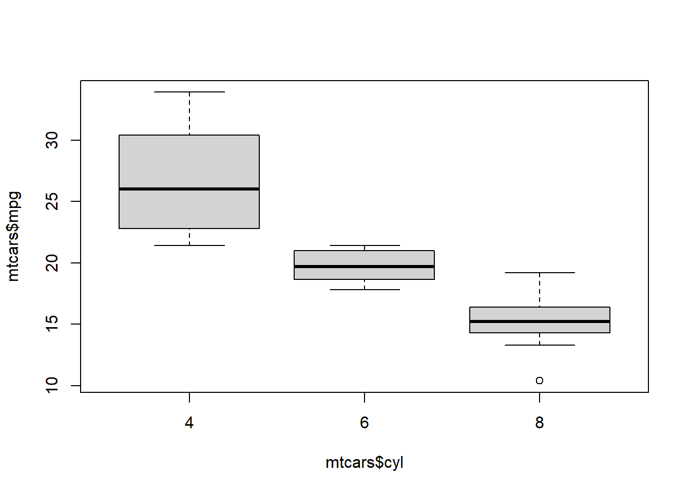
- Using ggplot, we would have the same issue. Since vs is a categorical variable, it does not look right when we use the geom_point() later.
ggplot(mtcars, aes(cyl, mpg)) + geom_point() + geom_smooth(method = "lm")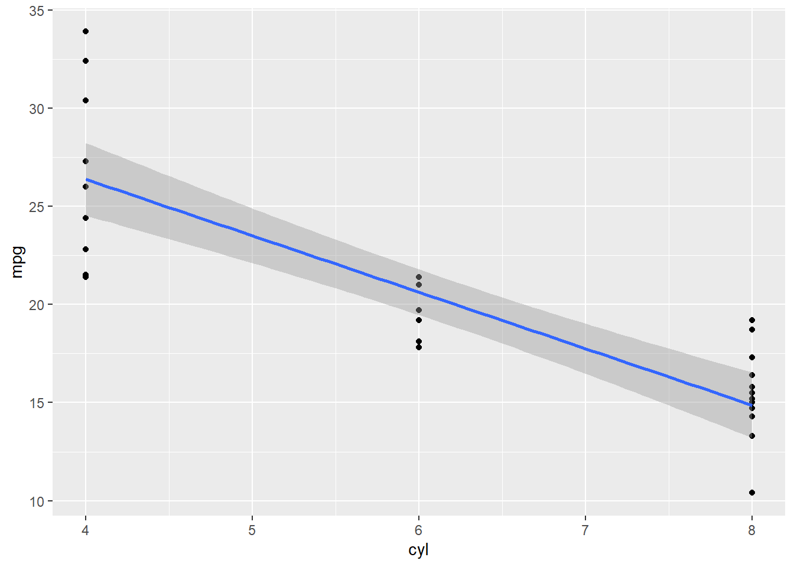
- Instead, we would want the geom_boxplot() layer like shown below. The geom_smooth() is also not an applicable layer to a boxplot and would need to be removed.
- When you create multiple boxplots in ggplot2 and one or more variables are numeric but not converted to factors, only one boxplot may show up because ggplot2 treats numeric variables as continuous. Boxplots group data by categorical variables, so if your variable is continuous, ggplot interprets it as a single category and produces only one boxplot.
- Below, we still have an error.
ggplot(mtcars, aes(cyl, mpg)) + geom_boxplot()
- Something still is not quite right here, so we would need to make sure cyl is correctly a factor before making the boxplot. Now, we should see multiple boxplots, one for each categorical level. To fix this, you need to convert the grouping variable to a factor using as.factor() in your data, so ggplot will recognize it as a categorical variable and display multiple boxplots accordingly.
mtcars <- mtcars %>%
mutate(cyl = as.factor(cyl))
ggplot(mtcars, aes(cyl, mpg)) + geom_boxplot()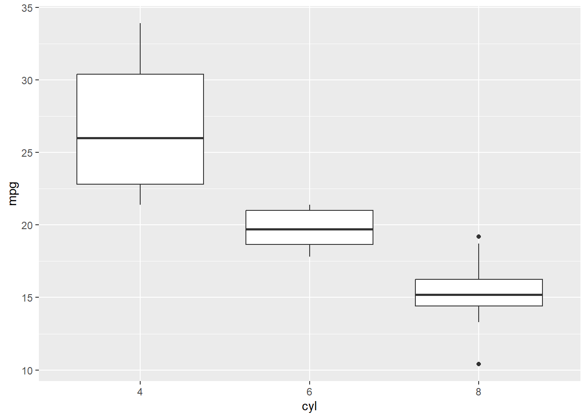
Try to Recreate
- You try examples of scatterplots using the UScrime data set that is part of the MASS package to examine a few relationships using ggplot2. A few examples are below.

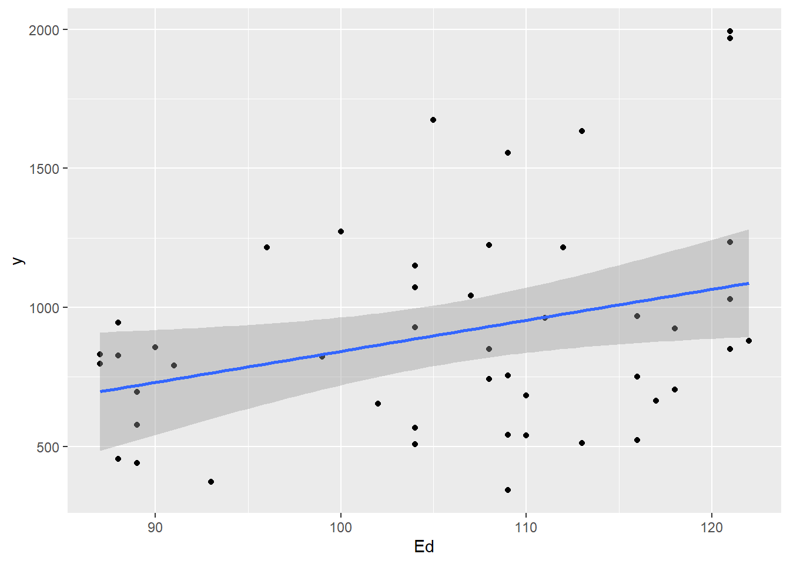
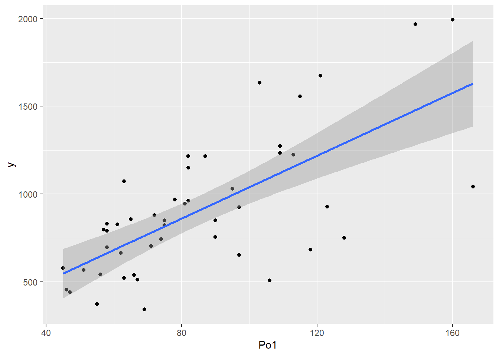
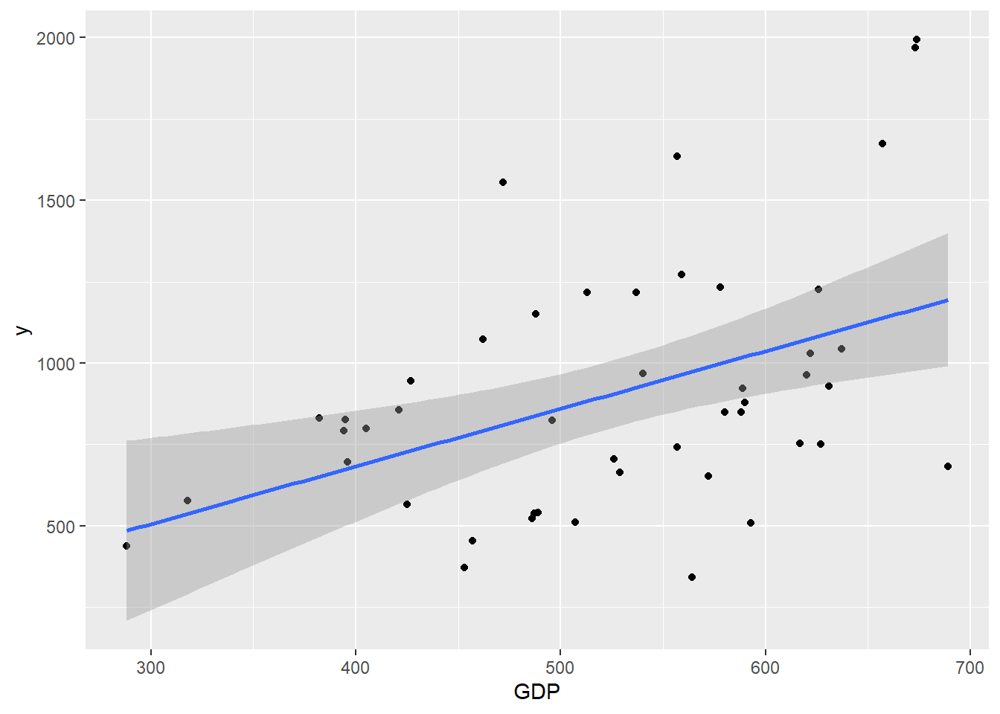
- See what information you can take away from the scatterplots above and create some more to practice.
Using AI
Use the following prompts on a generative AI, like chatGPT, to learn more about data visualization capabilities in ggplot2.
How can I modify the appearance of a ggplot bar chart to include custom colors for each bar, and what are the best practices for choosing colors in data visualization?
What is the role of layering in ggplot, and how can adding multiple layers, such as labels, themes, and lines, improve the readability of a plot?
When should a density plot be used instead of a histogram, and how does each visualization help in understanding the distribution of continuous data?
How can I use a boxplot in R to identify and visualize outliers in my dataset, and what additional steps should I take to handle these outliers?
How can I create a scatter plot in ggplot to explore relationships between two continuous variables, and how do I add a trendline to help interpret the results?
What are the steps for creating a grouped bar chart in ggplot, and how does this visualization help in comparing multiple categories or groups within a dataset?
Summary
- Practice many more examples with the help of ChatGPT and work towards constructing high-quality charts and graphs.